<!doctype html>
<html lang="en">
<head>
  <meta charset="utf-8">
  <meta name="viewport" content="width=device-width, initial-scale=1">
  <title>arxiv digest — 2026-10-21</title>
  <style>
:root {
  --bg: #ffffff;
  --fg: #1f2328;
  --muted: #59636e;
  --border: #d0d7de;
  --card: #f6f8fa;
  --link: #0969da;
}
body {
  max-width: 980px;
  margin: 0 auto;
  padding: 2rem 1rem 5rem;
  font-family: -apple-system, BlinkMacSystemFont, "Segoe UI", Helvetica, Arial, sans-serif;
  line-height: 1.55;
  color: var(--fg);
  background: var(--bg);
}
a { color: var(--link); }
img { max-width: 100%; height: auto; }
pre, code { background: var(--card); border-radius: 6px; }
pre { padding: 1rem; overflow-x: auto; }
blockquote { border-left: 4px solid var(--border); padding-left: 1rem; color: var(--muted); }
details { margin: 0.6rem 0; }
summary { cursor: pointer; font-weight: 600; }
.paper-figures-scroll {
  display: flex;
  gap: 1rem;
  overflow-x: auto;
  overscroll-behavior-x: contain;
  padding: 0.75rem 0.25rem 1rem;
  margin: 1rem 0 1.25rem;
  border-top: 1px solid var(--border);
  border-bottom: 1px solid var(--border);
  scroll-snap-type: x proximity;
}
.paper-figure-card {
  flex: 0 0 min(260px, 72vw);
  scroll-snap-align: start;
  background: var(--card);
  border: 1px solid var(--border);
  border-radius: 12px;
  padding: 0.55rem;
}
.paper-figure-card img {
  display: block;
  width: 100%;
  max-height: 240px;
  object-fit: contain;
  background: white;
  border-radius: 8px;
}
.paper-figure-caption {
  display: block;
  margin-top: 0.5rem;
  color: var(--muted);
  font-size: 0.85rem;
}
.figure-strip-hint {
  color: var(--muted);
  font-size: 0.9rem;
  margin-bottom: -0.3rem;
}
</style>
  <script>
    window.MathJax = {
      tex: {
        inlineMath: [['$', '$'], ['\\(', '\\)']],
        displayMath: [['$$', '$$'], ['\\[', '\\]']],
        processEscapes: true,
        processEnvironments: true
      },
      options: {
        skipHtmlTags: ['script', 'noscript', 'style', 'textarea', 'pre', 'code'],
        ignoreHtmlClass: 'tex2jax_ignore',
        processHtmlClass: 'tex2jax_process'
      }
    };
  </script>
  <script id="MathJax-script" async
    src="https://cdn.jsdelivr.net/npm/mathjax@3/es5/tex-chtml.js"></script>
</head>
<body>
<header style="background-color: #333; color: white; padding: 15px; margin-bottom: 20px;">
  <h1 style="margin: 0; font-size: 24px;">
    <a href="https://ochelpan.github.io/arXiv_clean/" style="color: white; text-decoration: none;">Main</a>
  </h1>
</header>

<h1>Daily arXiv Report</h1>

<hr>
<p>
<a href="index.html">← Index</a>
 · <a href="papers_03.html">← Previous</a> · <a href="papers_05.html">Next →</a>
</p>
<hr>

<h2>Papers 61–80</h2>
<p><a id="paper-2610.25943"></a></p>
<h3 id="ferroelastic-domain-wall-driven-glassy-dynamics-and-photoresponse-in-a-srtiomath485math-111-two-dimensional-electron-gas"><a href="http://arxiv.org/abs/2610.25943v1">Ferroelastic domain wall driven glassy dynamics and photoresponse in a SrTiO$_3$ (111) two-dimensional electron gas</a></h3>
<p><strong>Authors:</strong> Jyotirmay Maity, Manav Beniwal, Pranab Hazra, Sumit Tomar, Srimanta Middey<br>
<strong>Type:</strong> experiment · <strong>Category:</strong> disordered systems and neural networks · <strong>PDF:</strong> <a href="https://arxiv.org/pdf/2610.25943v1">https://arxiv.org/pdf/2610.25943v1</a><br>
<strong>Analysis basis:</strong> full PDF text, analyzed in chunks
<strong>Topic relevance:</strong> <code>scars &amp; prethermalization</code> <strong>3/5</strong> · <code>Frenkel-Kontorova</code> <strong>1/5</strong> · <code>correlated / nonlocal dissipation</code> <strong>1/5</strong> · <code>driven-dissipative phase transition</code> <strong>1/5</strong> · <code>non-equilibrium universality</code> <strong>1/5</strong> · <code>quantum measurements</code> <strong>1/5</strong></p>
<div class="figure-strip-hint">↔ Scroll figures horizontally</div>
<div class="paper-figures-scroll">
<figure class="paper-figure-card">
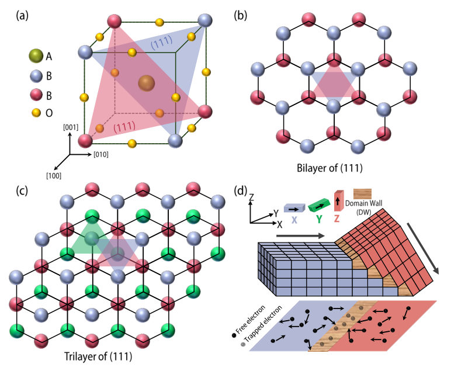
<figcaption class="paper-figure-caption"><b>Fig 1.</b> FIG. 1. (a) Schematic illustration of the (111) planes formed by the B-site sublattice in an ABO3 perovskite</figcaption>
</figure>
<figure class="paper-figure-card">
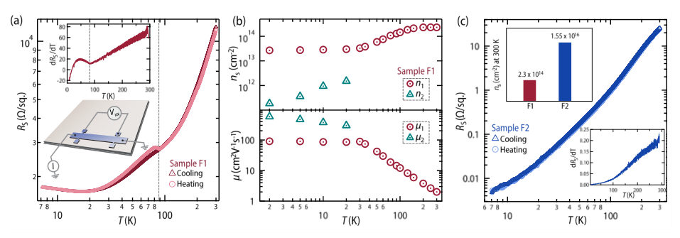
<figcaption class="paper-figure-caption"><b>Fig 2.</b> FIG. 2. (a) Temperature-dependent sheet resistance (RS) of the AlOx/STO (111) heterostructure (F1)</figcaption>
</figure>
<figure class="paper-figure-card">
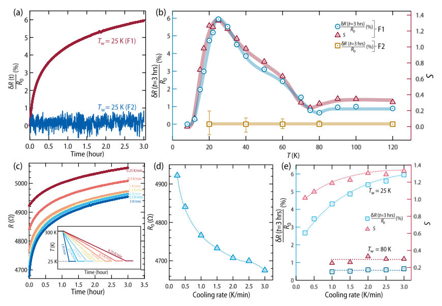
<figcaption class="paper-figure-caption"><b>Fig 3.</b> FIG. 3. (a) Temporal evolution of resistance at a fixed temperature of 25 K for samples F1 and F2. (b)</figcaption>
</figure>
<figure class="paper-figure-card">
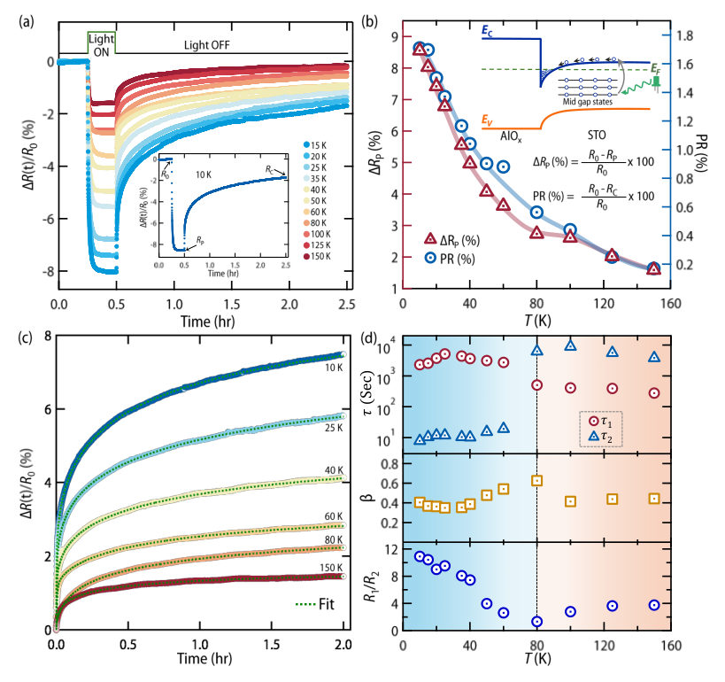
<figcaption class="paper-figure-caption"><b>Fig 4.</b> FIG. 4. (a) Temporal evolution of resistance at some fixed temperatures under 525 nm green light illumi-</figcaption>
</figure>
<figure class="paper-figure-card">
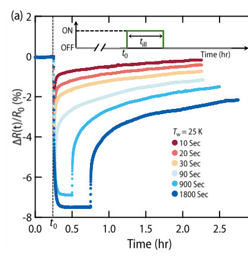
<figcaption class="paper-figure-caption"><b>Fig 5.</b> FIG. 5. (a) Relative change in resistance ( ∆R(t)</figcaption>
</figure>
</div>

<p><strong>Summary.</strong> This work demonstrates that the ferroelastic domain walls in SrTiO3 (111) act as a controllable, glassy degree of freedom influencing the electronic properties of 2DEGs. By tuning the carrier density, researchers can switch the system between a glassy state dominated by DW dynamics and a more metallic state. This opens avenues for manipulating electronic properties using topological defects.</p>
<p><strong>Why it may be interesting.</strong> The coupling between topological defects (DWs) and itinerant charge carriers provides a concrete, measurable platform for studying glassy dynamics and emergent order parameters in condensed matter systems.</p>
<details>
<summary>Detailed structure</summary>
<p><strong>Main problem.</strong> The study investigates how the polar ferroelastic domain-wall (DW) network in SrTiO3 (111) influences charge transport and photoresponse in two-dimensional electron gases (2DEGs).</p>
<p><strong>Main result.</strong> The slow, glassy dynamics observed in the 2DEG transport and photoresponse are directly linked to the underlying polar ferroelastic DW network, which acts as a tunable electronic degree of freedom.</p>
<p><strong>Method.</strong> The research combines low-temperature transport measurements (resistance relaxation, memory effects) with photoresponse measurements on AlOx/STO (111) heterostructures.</p>
<p><strong>Model / system.</strong> The physical system is a 2DEG confined at an AlOx/STO (111) interface. The key element is the ferroelastic domain wall network within the STO substrate, which introduces a polar background field.</p>
<p><strong>Key observables.</strong> Thermal hysteresis, slow resistance relaxation, memory effects, and persistent photoconductivity.</p>
<p><strong>Important parameters / regimes.</strong> Carrier density ($n_s$), temperature (especially the transition region around 80 K and 25 K), and light intensity.</p>
<p><strong>Assumptions / limitations.</strong> The slow dynamics observed are attributed to the glassy nature of the ferroelastic DW network, rather than purely electronic energy scales.</p>
<p><strong>Figures summary.</strong> Figures show resistance vs. temperature (hysteresis), temporal evolution of resistance (relaxation curves), and photoinduced changes in conductivity, demonstrating history and rate dependence.</p>
<p><strong>Paper structure.</strong> The paper systematically compares low-density (glassy) vs. high-density (non-glassy) 2DEGs, analyzes the temperature and time dependence of resistance relaxation, and finally links the photoresponse to the onset of DW polarity.</p>
</details>
<details>
<summary>Abstract</summary>
<p>The (111) orientation of SrTiO$_3$ (STO)-based heterostructures has emerged as a versatile platform for two-dimensional electron gases (2DEGs), yet the influence of STO's polar ferroelastic domain-wall (DW) network on charge transport remains largely unexplored. Here we study AlO$_x$/STO (111) interfaces hosting 2DEGs of different carrier densities. In the lower-density 2DEG, low-temperature transport exhibits thermal hysteresis, slow resistance relaxation, cooling-rate dependence, and memory effects, signaling glasslike electron dynamics. The relaxation is strongly non-monotonic in temperature, increasing below $\sim$80 K, peaking near 25 K, and vanishing below $\sim$12 K, tracking the established evolution of the ferroelastic DW state of bulk STO rather than any electronic energy scale, which identifies the DW network as its origin. These signatures are absent in a second, more metallic interface with much higher carrier density, demonstrating that the electron-DW coupling can be tuned. We further show that polar DWs govern the photoresponse: the persistent photoconductivity rises sharply below $\sim$80 K, coinciding with the onset of DW polarity. Together, these results establish polar ferroelastic DWs as a carrier-density-tunable electronic degree of freedom in STO (111)-based 2DEGs, opening routes to manipulate 2DEG properties through topological defects.</p>
</details>
<p><sub><a href="#top">↑ back to top</a></sub></p>

<p><a id="paper-2610.24208"></a></p>
<h3 id="kohlers-rule-holds-in-the-strange-metallic-hubbard-model"><a href="http://arxiv.org/abs/2610.24208v1">Kohler's Rule Holds in the Strange Metallic Hubbard Model</a></h3>
<p><strong>Authors:</strong> Rebekah M. Jin, Emily Z. Zhang, Jixun K. Ding, Brian Moritz, Thomas P. Devereaux<br>
<strong>Type:</strong> theory · <strong>Category:</strong> strongly correlated electrons · <strong>PDF:</strong> <a href="https://arxiv.org/pdf/2610.24208v1">https://arxiv.org/pdf/2610.24208v1</a><br>
<strong>Analysis basis:</strong> full PDF text, analyzed in chunks
<strong>Topic relevance:</strong> <code>analog quantum simulation</code> <strong>3/5</strong> · <code>Keldysh / 2PI / non-Gaussian methods</code> <strong>2/5</strong> · <code>non-equilibrium universality</code> <strong>2/5</strong> · <code>methods for driven-dissipative</code> <strong>1/5</strong></p>
<div class="figure-strip-hint">↔ Scroll figures horizontally</div>
<div class="paper-figures-scroll">
<figure class="paper-figure-card">
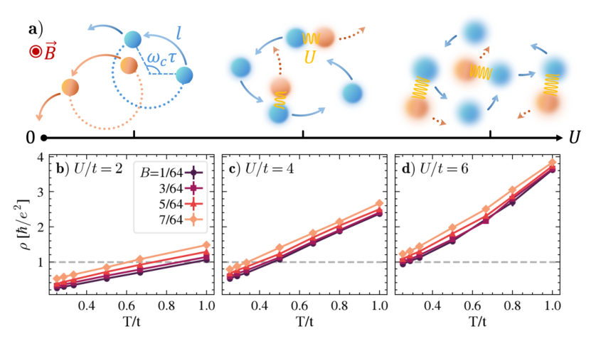
<figcaption class="paper-figure-caption"><b>Fig 1.</b> FIG. 1. Semiclassical magnetoresistance picture and Hubbard-Hofstadter resistivity versus interaction strength U. (a) Schematic illustration of semiclassical magnetoresistance in an interacting model as a function of U. At weak coupling (left), electrons undergo independent cyclotron orbits of mean free path l with cyclotron frequency ωc and scattering time τ. Stronger coupling (center) shortens the mean free path, and at strongest U (right) quasiparticles may be shorter-lived yet still traverse well-defined orbits governed by a single scattering time. (b–d) Temperature dependence of the D.C. longitudinal resistivity ρ for U/t = 2, 4, 6, respectively. The particle density ⟨n⟩= 0.8 for all...</figcaption>
</figure>
<figure class="paper-figure-card">
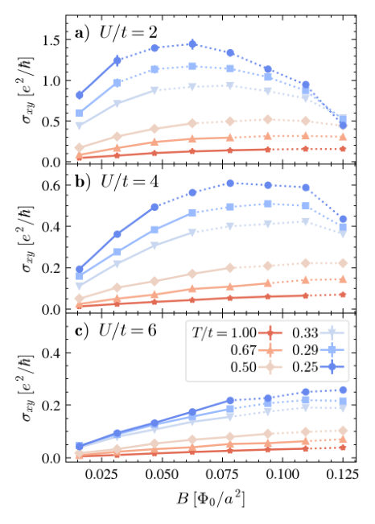
<figcaption class="paper-figure-caption"><b>Fig 2.</b> FIG. 2. Magnetic field and temperature dependence of the D.C. transverse conductivity σxy. (a-c) are interaction strengths U/t = 2, 4, 6, and particle density ⟨n⟩= 0.8 for all panels. σxy is approximately B-linear below the cutoff field B⋆(U, T, n). For each temperature, solid and dotted connect- ing lines indicate fields below and above B⋆, respectively.</figcaption>
</figure>
<figure class="paper-figure-card">
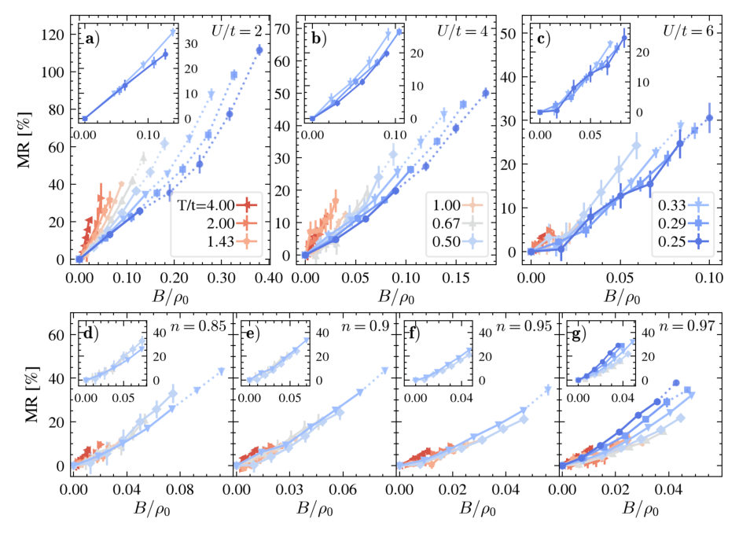
<figcaption class="paper-figure-caption"><b>Fig 3.</b> FIG. 3. Kohler plots: magnetoresistance vs. the magnetic field strength B divided by the zero-field resistivity ρ0 for tem- peratures T/t = 0.25 −4.0. (a–c) are interaction strengths U/t = 2, 4, 6 at fixed particle density ⟨n⟩= 0.8. (d–g) are ⟨n⟩= 0.85, 0.9, 0.95, 0.97 at fixed U/t = 4. Solid and dotted lines denote points below and above the cutoff field B⋆(U, T, n), respectively. Insets show zoomed views of the Kohler-obeying temperatures in each panel, restricted to below B⋆.</figcaption>
</figure>
<figure class="paper-figure-card">
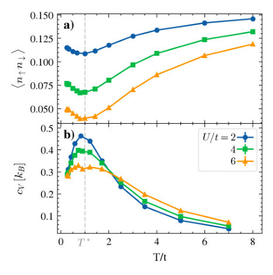
<figcaption class="paper-figure-caption"><b>Fig 4.</b> FIG. 4. Temperature dependence of the (a) double occupancy ⟨d⟩= ⟨n↑n↓⟩and (b) specific heat cV for interaction strengths U/t = 2, 4, 6, and magnetic field strength B = 1/64. Each curve exhibits a minimum/maximum at T ⋆≈t, separating a low-T quantum coherent regime from a high-T thermally disordered one.</figcaption>
</figure>
</div>

<p><strong>Summary.</strong> This theoretical study uses Quantum Monte Carlo simulations on the Hubbard-Hofstadter model to investigate magnetotransport in strange metals. Despite the system exhibiting hallmarks of non-Fermi liquid behavior, the authors demonstrate that Kohler's rule for magnetoresistance surprisingly holds. This suggests that the underlying physics is governed by a robust many-body quantum coherence mechanism.</p>
<p><strong>Why it may be interesting.</strong> The finding that a simple scaling law like Kohler's rule persists in a regime characterized by strong correlations and non-Fermi liquid behavior is highly relevant to understanding emergent quantum phenomena in strongly correlated materials.</p>
<details>
<summary>Detailed structure</summary>
<p><strong>Main problem.</strong> The study investigates the origin of anomalous magnetotransport in strange metals, specifically testing whether Kohler's rule holds despite strong correlations and the breakdown of conventional quasiparticle descriptions.</p>
<p><strong>Main result.</strong> The authors find that Kohler's rule unexpectedly holds in the strongly correlated Hubbard-Hofstadter model, suggesting that the scaling reflects a general form of many-body quantum coherence rather than quasiparticle behavior.</p>
<p><strong>Method.</strong> The research employs Determinant Quantum Monte Carlo (DQMC) simulations combined with advanced analytic continuation techniques (like Constrained MaxEnt) to extract real-frequency transport coefficients from imaginary-time correlation functions.</p>
<p><strong>Model / system.</strong> The system modeled is the hole-doped Hubbard-Hofstadter model, a minimal lattice Hamiltonian used to simulate interacting electrons in a magnetic field. The calculations are performed on finite lattices ($8 	imes 8$ or $10 	imes 10$).</p>
<p><strong>Key observables.</strong> Magnetoresistance (MR), longitudinal resistivity ($
ho_{xx}$), transverse conductivity ($\sigma_{xy}$), double occupancy ($\langle d 
angle$), and specific heat ($c_V$).</p>
<p><strong>Important parameters / regimes.</strong> Strong on-site interaction ($U/t$), hole doping ($\langle n 
angle$), and temperature ($T/t$). A key crossover temperature is $T^\star \approx t$.</p>
<p><strong>Assumptions / limitations.</strong> The primary assumption is that the DQMC method, coupled with constrained MaxEnt, can accurately map imaginary-time correlation functions to real-frequency transport spectra.</p>
<p><strong>Figures summary.</strong> Figures illustrate the temperature dependence of $\langle d 
angle$ and $c_V$ showing extrema at $T^\star/t \approx 1$, and show Kohler plots demonstrating the collapse of MR data onto a universal scaling function below a characteristic field $B^\star$.</p>
<p><strong>Paper structure.</strong> The paper first establishes the theoretical framework using the Hubbard-Hofstadter model and DQMC. It then details the complex numerical methods for extracting real-frequency conductivities. The core analysis focuses on calculating and plotting the magnetoresistance across various doping and interaction regimes, culminating in the confirmation of Kohler's scaling law.</p>
</details>
<details>
<summary>Abstract</summary>
<p>Unconventional magnetotransport violating Kohler's rule has been reported in many strongly correlated strange metals, but the exact origin of these violations is yet unknown. To investigate this question, we use determinant quantum Monte Carlo to compute the magnetoresistance of the hole-doped Hubbard-Hofstadter model. Despite $T$-linear resistivity exceeding the Mott-Ioffe-Regel limit and the nominal absence of well-defined quasiparticles, we find Kohler's rule unexpectedly holds across a wide range of on-site interaction strengths and hole dopings. In particular, Kohler emerges below a crossover temperature $T^\star\approx t$ identified from the double occupancy and specific heat, coinciding with the onset of local singlet correlations between lattice sites. We thus propose that Kohler scaling in this regime reflects a more general form of many-body quantum coherence. Our results show that strong correlations and strange metallicity do not themselves generically produce anomalous magnetoresistance.</p>
</details>
<p><sub><a href="#top">↑ back to top</a></sub></p>

<p><a id="paper-2610.26755"></a></p>
<h3 id="a-mclennan-formula-for-equiaccessible-steady-states"><a href="http://arxiv.org/abs/2610.26755v1">A McLennan formula for equiaccessible steady states</a></h3>
<p><strong>Authors:</strong> Jacob Calvert<br>
<strong>Type:</strong> theory · <strong>Category:</strong> statistical mechanics · <strong>PDF:</strong> <a href="https://arxiv.org/pdf/2610.26755v1">https://arxiv.org/pdf/2610.26755v1</a><br>
<strong>Analysis basis:</strong> full PDF text, analyzed in chunks
<strong>Topic relevance:</strong> <code>methods for driven-dissipative</code> <strong>3/5</strong> · <code>non-equilibrium universality</code> <strong>3/5</strong> · <code>driven-dissipative phase transition</code> <strong>1/5</strong></p>
<div class="figure-strip-hint">↔ Scroll figures horizontally</div>
<div class="paper-figures-scroll">
<figure class="paper-figure-card">
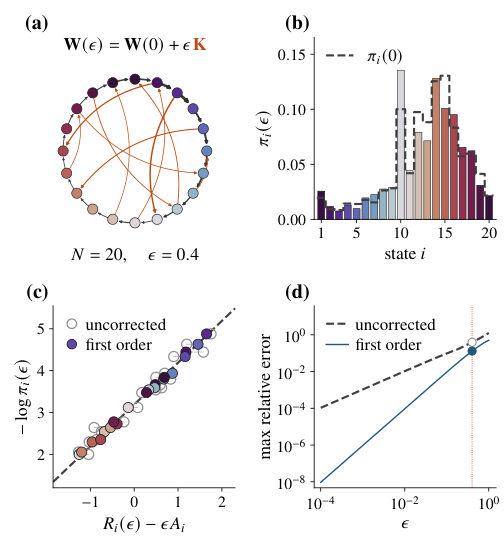
<figcaption class="paper-figure-caption"><b>Fig 1.</b> FIG. 1. Correction to the equiaccessible law of a perturbed directed cycle. (a) Dynamics 𝑾(0) on a directed cycle when perturbed by 𝑲 (red arrows) are nearly equiaccessible. (b) The perturbation changes the stationary distribution, causing the equiaccessible law to fail. (c) Analogue of McLennan formula restores accuracy. (d) Relative error of uncorrected and corrected predictions, as a function of the perturbation strength. Dotted line indicates 𝜖= 0.4.</figcaption>
</figure>
<figure class="paper-figure-card">
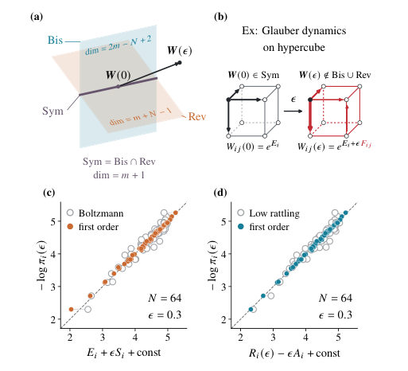
<figcaption class="paper-figure-caption"><b>Fig 2.</b> FIG. 2. Comparison of McLennan formulas. (a) The local geom- etry of the Bis, Rev, and Sym sets of Markov generators, whose dimensions depend on 𝑚, the number of edges in the (undirected, connected, bipartite) transition graph. (b) Perturbation of the trap model 𝑾(0) ∈Sym on the six-dimensional hypercubic graph by random anti-symmetric forces 𝐹𝑖𝑗= −𝐹𝑗𝑖produces a generator 𝑾(𝜖) outside of Bis and Rev. The McLennan formulas, Eqs. (7) and (10), correct the (c) equilibrium and (d) equiaccessible laws.</figcaption>
</figure>
</div>

<p><strong>Summary.</strong> This theoretical work generalizes the McLennan formula, which describes deviations from equilibrium, to a broader class of 'equiaccessible' steady states. By analyzing perturbed Markov jump processes, the authors derive a new first-order correction term that accounts for global traffic imbalances. This provides a more robust tool for characterizing non-equilibrium steady states in complex systems.</p>
<p><strong>Why it may be interesting.</strong> It provides a powerful, generalized tool for analyzing non-equilibrium steady states in Markovian systems, extending concepts from near-equilibrium thermodynamics to regimes far from equilibrium.</p>
<details>
<summary>Detailed structure</summary>
<p><strong>Main problem.</strong> The paper aims to derive an analogue of the McLennan formula for steady states that are 'equiaccessible,' allowing the description to remain valid arbitrarily far from equilibrium, unlike the original formula.</p>
<p><strong>Main result.</strong> The analogue formula for equiaccessible states is $\pi_i(\epsilon) \propto \exp(-R_i + \epsilon A_i)$, where $A_i$ quantifies the impact of global traffic imbalances.</p>
<p><strong>Method.</strong> The derivation uses matrix perturbation theory (Neumann series expansion) applied to the stationary distribution of a perturbed Markov jump process.</p>
<p><strong>Model / system.</strong> The system is modeled as a stationary Markov jump process on $N$ discrete states, analyzed under small perturbations ($\mathbf{P}(\epsilon) = \mathbf{P} + \epsilon\mathbf{B}$).</p>
<p><strong>Key observables.</strong> Stationary occupation probabilities ($\pi_i(\epsilon)$), escape rates ($R_i$), and the correction term ($A_i$).</p>
<p><strong>Important parameters / regimes.</strong> The perturbation strength $\epsilon$, and the local escape rates/transition rates ($W_{ij}$).</p>
<p><strong>Assumptions / limitations.</strong> The derivation assumes the perturbed generator remains irreducible for small $\epsilon \ge 0$, and relies on the spectral radius of $\mathbf{B}\mathcal{Z}$ being less than one.</p>
<p><strong>Figures summary.</strong> Figure 1 illustrates the correction to the equiaccessible law on a perturbed directed cycle, showing the analogue formula restores accuracy. Table I compares formulas for equilibrium vs. equiaccessible states.</p>
<p><strong>Paper structure.</strong> The paper establishes the mathematical framework by comparing the known near-equilibrium McLennan formula with the required analogue for equiaccessible states. It derives the first-order correction term $A_i$ using spectral methods and relates this to physical concepts like traffic imbalances.</p>
</details>
<details>
<summary>Abstract</summary>
<p>Near equilibrium, the Boltzmann distribution is corrected by the transient irreversible entropy flux, a result known as the McLennan formula. By expanding around equiaccessible steady states instead, we derive an analogue that can hold arbitrarily far from equilibrium. At zeroth order, steady-state occupation is determined solely by local escape rates, yielding a strong form of the active-matter principle of "low rattling." The first-order correction measures the impact of traffic imbalances on the accessibility of each state, marking the onset of nonlocal determinants of relative occupation.</p>
</details>
<p><sub><a href="#top">↑ back to top</a></sub></p>

<p><a id="paper-2610.26222"></a></p>
<h3 id="a-readout-aware-theory-of-approximate-heisenberg-propagation"><a href="http://arxiv.org/abs/2610.26222v1">A Readout-Aware Theory of Approximate Heisenberg Propagation</a></h3>
<p><strong>Authors:</strong> Yubraj Bhandari, Jakob S. Kottmann, Adelina Bärligea<br>
<strong>Type:</strong> theory · <strong>Category:</strong> other · <strong>PDF:</strong> <a href="https://arxiv.org/pdf/2610.26222v1">https://arxiv.org/pdf/2610.26222v1</a><br>
<strong>Analysis basis:</strong> full PDF text, analyzed in chunks
<strong>Topic relevance:</strong> <code>methods for driven-dissipative</code> <strong>3/5</strong> · <code>analog quantum simulation</code> <strong>2/5</strong> · <code>Keldysh / 2PI / non-Gaussian methods</code> <strong>1/5</strong> · <code>quantum measurements</code> <strong>1/5</strong></p>
<div class="figure-strip-hint">↔ Scroll figures horizontally</div>
<div class="paper-figures-scroll">
<figure class="paper-figure-card">
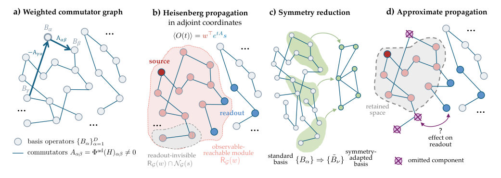
<figcaption class="paper-figure-caption"><b>Fig 1.</b> FIG. 1. Unified graph picture of exact and approximate Heisenberg propagation. (a) In an operator basis B = {Bα}D α=1, each nonzero row-action coefficient Aαβ of the adjoint matrix (6) defines a weighted edge Bα →Bβ of the commutator graph, with the reverse edge carrying weight −Aαβ. (b) The mean value (10) can be interpreted as the signed transfer between two sets. The support of the observable coefficients w defines the source set, while the nonzero components of s define the state readout. Exact Heisenberg propagation requires only the observable-reachable module RG(w), and its intersection with the readout- unobservable subspace NG(s) (19) can be removed without affecting the computed...</figcaption>
</figure>
<figure class="paper-figure-card">
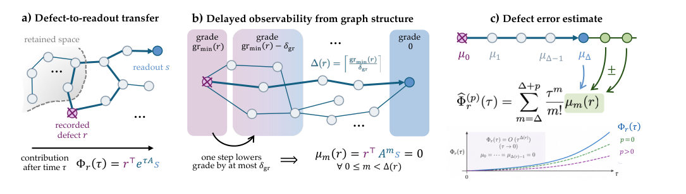
<figcaption class="paper-figure-caption"><b>Fig 2.</b> FIG. 2. Delayed observability and readout-aware defect error estimation. (a) A recorded defect r contributes to the readout through its transfer function Φr(t) (42), which depends on the remaining propagation time. (b) The readout grading excludes contributions from graph walks shorter than ∆(r) (44) steps. Consequently, the corresponding transfer moments µm(r) (43) vanish for m &lt; ∆(r), as established in Theorem 1. (c) These vanishing moments motivate the signed error estimates of Eqs. (55) and (56). The leading-allowed-order estimate uses the first allowed moment, while the p-enriched estimate includes the next p moments. Both approximate the exact defect transfer through a truncated...</figcaption>
</figure>
<figure class="paper-figure-card">
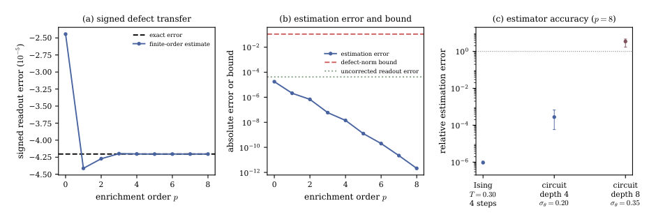
<figcaption class="paper-figure-caption"><b>Fig 3.</b> FIG. 3. Signed readout-error estimates from discarded Pauli components. (a) Exact signed error and finite-order transfer estimates for X/Y -grade truncation of a transverse-field Ising circuit. Every recorded defect has minimum X/Y grade two, so its transfer moments vanish below order ∆= 2. The enrichment order p counts additional transfer orders beyond ∆. (b) Absolute estimation discrepancy compared with the uncorrected readout error and the conservative defect-norm bound for the same calculation. (c) Relative estimation error R(8) from Eq. (E3) for three ensembles of 50 six-qubit instances each, using an X/Y -grade cutoff of one. The dotted line marks R(8) = 1. Points show medians and...</figcaption>
</figure>
<figure class="paper-figure-card">
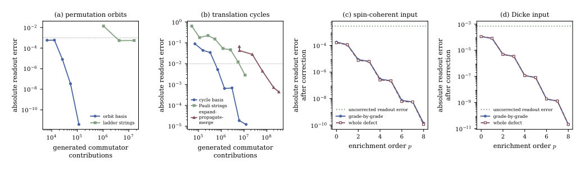
<figcaption class="paper-figure-caption"><b>Fig 4.</b> FIG. 4. Approximate propagation and defect-transfer estimates in symmetry-adapted operator coordinates. (a) Direct permutation-orbit propagation and propagation of individual ladder strings for the LMG model Eq. (64) at n = 12 and T = 0.3, using three first-order product-formula steps. (b) Direct translation-cycle propagation, individual Pauli strings, and merge-after symmetry compression for Eq. (65) at n = 12 and T = 1, using eight first-order product-formula steps. Both panels show absolute readout errors relative to the same untruncated circuit, plotted against generated commutator contributions. The dotted lines mark the comparison levels 10−3 in (a) and 10−2 in (b). Only completed...</figcaption>
</figure>
<figure class="paper-figure-card">
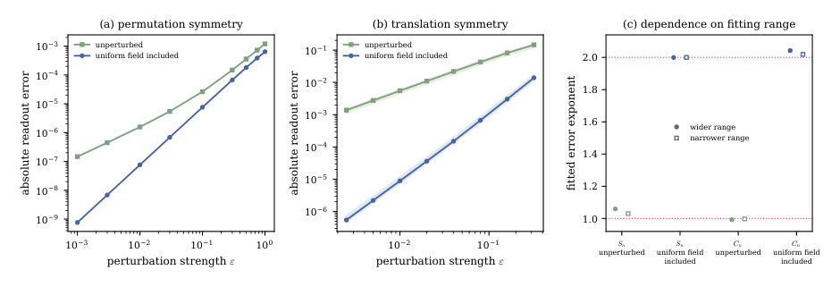
<figcaption class="paper-figure-caption"><b>Fig 5.</b> FIG. 5. Readout errors under weak symmetry breaking. (a) Permutation-invariant LMG dynamics and (b) translation- invariant Ising dynamics with the inhomogeneous field of Eq. (69). The unperturbed approximation neglects the full pertur- bation, while the approximation including the uniform field includes its invariant component. In (a,b), points show median absolute readout errors and shaded bands denote 95% bootstrap confidence intervals over sampled inhomogeneous fields. (c) Fitted error exponents for the two approximations using the original and a shorter perturbative fitting interval. The results approach linear scaling for the unperturbed approximation and quadratic scaling for the...</figcaption>
</figure>
</div>

<p><strong>Summary.</strong> This paper introduces a generalized Pauli propagation framework to rigorously analyze errors in computing quantum expectation values. By mapping dynamics onto a weighted commutator graph, the authors derive exact identities quantifying how approximation errors accumulate. This provides a powerful, readout-aware tool for developing more accurate and reliable quantum simulation strategies.</p>
<p><strong>Why it may be interesting.</strong> This work provides a rigorous, graph-theoretic framework for error analysis in quantum simulation, which is crucial for developing reliable numerical techniques for open quantum systems and dynamics.</p>
<details>
<summary>Detailed structure</summary>
<p><strong>Main problem.</strong> The paper addresses the challenge of efficiently and accurately computing quantum expectation values $\langle O(t) 
angle$ in the Heisenberg picture, where approximations often discard crucial operator components.</p>
<p><strong>Main result.</strong> The authors develop a framework establishing 'delayed observability,' providing exact identities to quantify approximation errors based on signed contributions of omitted components, leading to state-dependent error estimates.</p>
<p><strong>Method.</strong> The core method is 'generalized Pauli propagation,' which maps the evolution onto a weighted commutator graph and reduces the problem to a bilinear exponential action on a finite-dimensional subspace.</p>
<p><strong>Model / system.</strong> The theory applies to general quantum many-body dynamics governed by Hamiltonians, using the adjoint action $   ext{ad}_H$ to track the evolution of observables $O$. Specific tests involve Ising and circuit ensembles.</p>
<p><strong>Key observables.</strong> Expectation value $\langle O(t) 
angle$, approximation error ($\epsilon_{	ext{mv}}(t)$), and the weighted commutator graph structure.</p>
<p><strong>Important parameters / regimes.</strong> Propagation time ($t$), perturbation strength ($\epsilon$), and the order of approximation ($p$).</p>
<p><strong>Assumptions / limitations.</strong> The analysis relies on restricting the dynamics to a finite-dimensional invariant subspace $V$ and deriving error bounds based on graph structure, though cancellations can invalidate simple bounds.</p>
<p><strong>Figures summary.</strong> Figures illustrate the unified graph picture of the mean value calculation, showing the source-to-readout transfer, and comparing relative estimation errors and sign accuracy for different circuit depths.</p>
<p><strong>Paper structure.</strong> The paper builds from defining the general problem via the commutator graph, deriving exact error identities (delayed observability), and then applying this framework to test its efficacy across various physical models and approximation schemes.</p>
</details>
<details>
<summary>Abstract</summary>
<p>Classical methods for computing quantum expectation values often propagate observables in the Heisenberg picture. To remain tractable, these methods rely on approximations that discard operator components during evolution. Yet the magnitude of these components alone does not determine the resulting expectation-value error, which also depends on their subsequent evolution and the input state. We develop \emph{generalized Pauli propagation}, a common algebraic framework encompassing Pauli propagation, Lie-algebraic simulation, and Krylov subspace methods. Using weighted commutator graphs, we derive exact identities that relate approximation errors to the signed contributions of omitted and discarded operator components. Our central result establishes \emph{delayed observability}, identifying conditions under which these contributions vanish at low orders in propagation time. We use this structure to develop finite-order error estimates and state-dependent selection rules. We further prove that retaining the symmetry-preserving part of a weak perturbation eliminates first-order expectation-value errors under suitable symmetry conditions. By revealing how approximation errors affect the desired expectation value, our framework provides a basis for more informative error analysis and the development of readout-aware simulation strategies.</p>
</details>
<p><sub><a href="#top">↑ back to top</a></sub></p>

<p><a id="paper-2610.24353"></a></p>
<h3 id="entanglededge-a-distributed-system-for-orbital-quantum-sensing-and-learning"><a href="http://arxiv.org/abs/2610.24353v1">EntangledEdge: A Distributed System for Orbital Quantum Sensing and Learning</a></h3>
<p><strong>Authors:</strong> Mohammad Abrarul Hasanat, Amit Samanta, Jason Ludmir, Tirthak Patel, Rohan Basu Roy<br>
<strong>Type:</strong> both · <strong>Category:</strong> quantum information and computing · <strong>PDF:</strong> <a href="https://arxiv.org/pdf/2610.24353v1">https://arxiv.org/pdf/2610.24353v1</a><br>
<strong>Analysis basis:</strong> full PDF text, analyzed in chunks
<strong>Topic relevance:</strong> <code>QC/QI experiment</code> <strong>3/5</strong> · <code>quantum measurements</code> <strong>3/5</strong> · <code>quantum optics experiment</code> <strong>1/5</strong></p>
<div class="figure-strip-hint">↔ Scroll figures horizontally</div>
<div class="paper-figures-scroll">
<figure class="paper-figure-card">
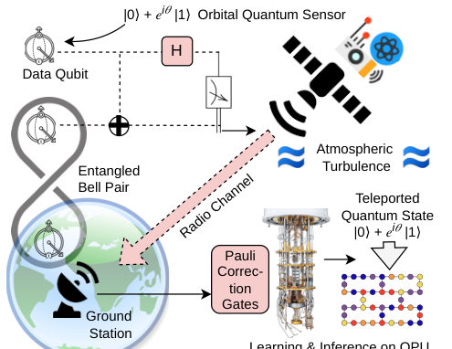
<figcaption class="paper-figure-caption"><b>Fig 1.</b> Figure 1. An orbital quantum sensor teleports its data qubit to a ground station’s QPUs through a pre-shared Bell pair and a classical radio channel, where an ansatz performs learning and inference on the recovered state.</figcaption>
</figure>
<figure class="paper-figure-card">
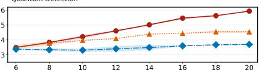
<figcaption class="paper-figure-caption"><b>Fig 2.</b> Figure 2. The fully quantum pipeline leads. The others mea- sure the state at the satellite and lose the quantum structure. Shaded bands are across-seed standard deviations.</figcaption>
</figure>
<figure class="paper-figure-card">
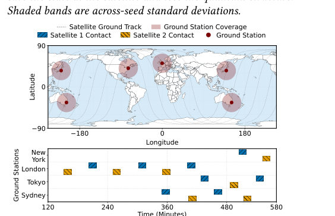
<figcaption class="paper-figure-caption"><b>Fig 3.</b> Figure 3. Ground tracks of two satellites (NOAA-20, NOAA- 21), ground-station coverage disks, and contact windows. Passes are short, sparse, and not simultaneous across stations. Empirical evidence. Fig. 2 confirms this on OPS-SAT [71] telemetry data as the anomaly fraction sweeps from 6% to 20%. All three pipelines share the same bottleneck and train- ing budget. The fully quantum pipeline (sense →teleport → quantum autoencoder detection) holds the highest F1 at ev- ery operating point. The classical-transmission pipeline mea- sures quantum state 𝜌at the satellite into a 25-dimensional vector of single-qubit X/Y/Z and two-qubit ZZ observables, transmits it, and runs a classical autoencoder...</figcaption>
</figure>
<figure class="paper-figure-card">
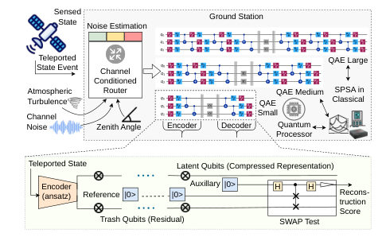
<figcaption class="paper-figure-caption"><b>Fig 4.</b> Figure 4. Classical telemetry alone selects one capacity-tier QAE on the QPU, with SPSA gradient estimation on a classical node. The inset details the label-free SWAP-test reconstruction, which yields a scalar score without measuring the input state.</figcaption>
</figure>
<figure class="paper-figure-card">
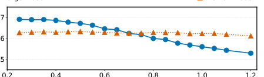
<figcaption class="paper-figure-caption"><b>Fig 5.</b> Figure 5. F1 score against the per-link channel noise parameter 𝜂for two QAE capacities at opposite ends of the model-size axis. The large capacity has higher F1 at low 𝜂. The small capacity has a higher F1 at high 𝜂. No single capacity covers the range. The pattern generalizes to other pairs on the axis. primitive that returns the closeness between two quantum registers as a single scalar without disturbing the registers it compares. The test uses an auxiliary qubit and a controlled- SWAP between the trash register and the reference register. A single measurement on the auxiliary qubit produces an out- come whose probability grows as the trash register deviates from the reference. This...</figcaption>
</figure>
</div>

<p><strong>Summary.</strong> This paper introduces EntangledEdge, a novel distributed system designed to perform quantum sensing and machine learning end-to-end across space and ground stations. It solves the critical problem of preserving quantum information during transmission by using quantum teleportation. The architecture achieves high-quality inference while managing real-world constraints like decoherence and data sparsity.</p>
<p><strong>Why it may be interesting.</strong> It addresses the practical challenge of integrating quantum sensing measurements into real-world, distributed machine learning pipelines, which is crucial for quantum networking and remote quantum computation.</p>
<details>
<summary>Detailed structure</summary>
<p><strong>Main problem.</strong> Developing a distributed system for quantum sensing data that remains quantum from the sensor in orbit to the inference engine on the ground, circumventing classical measurement collapse.</p>
<p><strong>Main result.</strong> The proposed EntangledEdge architecture achieves high-quality inference by unifying sensing and learning end-to-end, showing superior performance over classical and centralized methods.</p>
<p><strong>Method.</strong> The system uses quantum teleportation to transfer the sensed quantum state from the satellite to the ground QPU, followed by quantum autoencoder learning.</p>
<p><strong>Model / system.</strong> The system involves an orbital quantum sensor interacting with a field, transmitting the state via a quantum link (teleportation) to a ground QPU for processing. It utilizes a quantum data plane and a classical control plane.</p>
<p><strong>Key observables.</strong> F1 Score, detection quality, latency, throughput, and QPU utilization.</p>
<p><strong>Important parameters / regimes.</strong> Quantum state superposition and entanglement, hardware fidelity, and the short coherence times ($T_2$) of the qubits.</p>
<p><strong>Assumptions / limitations.</strong> Quantum data cannot be buffered or copied on the satellite due to the no-cloning theorem and short coherence times; learning must occur online.</p>
<p><strong>Figures summary.</strong> Figures illustrate the end-to-end process from orbital sensing to ground inference, comparing performance across different data aggregation architectures (Isolated, Centralized, Federated).</p>
<p><strong>Paper structure.</strong> The paper introduces the problem, details the EntangledEdge architecture (quantum data plane + classical control plane), compares its performance against various baselines (e.g., classical transmission, centralized learning), and validates scalability and robustness.</p>
</details>
<details>
<summary>Abstract</summary>
<p>An orbital quantum sensor is more precise than classical and holds its information in a quantum state's superposition and entanglement, which classical measurement collapses. Learning on quantum-sensed data therefore requires a distributed system in which the data stay quantum from sensor to inference. We present EntangledEdge, the first system architecture to unify orbital quantum sensing and learning end-to-end, with a quantum data plane and a classical control plane. It routes each event to a channel-matched model in a capacity-diverse bank, adapts its detection threshold without labels, and aggregates across stations by hardware fidelity. Evaluated with a hybrid prototype (real quantum processors, simulated orbit-to-ground link) over satellite telemetry, EntangledEdge achieves high-quality inference at bounded per-event cost, improves quantum processor utilization, and scales with fleet size.</p>
</details>
<p><sub><a href="#top">↑ back to top</a></sub></p>

<p><a id="paper-2610.24923"></a></p>
<h3 id="frustration-and-topology-in-the-phase-behavior-of-solute-frustrated-math525math-clock-models"><a href="http://arxiv.org/abs/2610.24923v1">Frustration and topology in the phase behavior of solute-frustrated $q$-clock models</a></h3>
<p><strong>Authors:</strong> Hari Rajesh, Richard C. Remsing<br>
<strong>Type:</strong> theory · <strong>Category:</strong> statistical mechanics · <strong>PDF:</strong> <a href="https://arxiv.org/pdf/2610.24923v1">https://arxiv.org/pdf/2610.24923v1</a><br>
<strong>Analysis basis:</strong> full PDF text, analyzed in chunks
<strong>Topic relevance:</strong> <code>analog quantum simulation</code> <strong>3/5</strong> · <code>Frenkel-Kontorova</code> <strong>1/5</strong> · <code>driven-dissipative phase transition</code> <strong>1/5</strong> · <code>methods for driven-dissipative</code> <strong>1/5</strong> · <code>non-equilibrium universality</code> <strong>1/5</strong></p>
<div class="figure-strip-hint">↔ Scroll figures horizontally</div>
<div class="paper-figures-scroll">
<figure class="paper-figure-card">
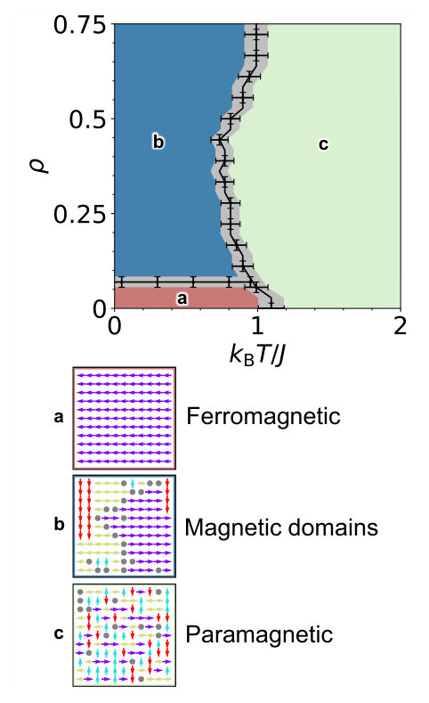
<figcaption class="paper-figure-caption"><b>Fig 1.</b> FIG. 1. Phase diagram of the SF4C model with Q = +1.</figcaption>
</figure>
<figure class="paper-figure-card">
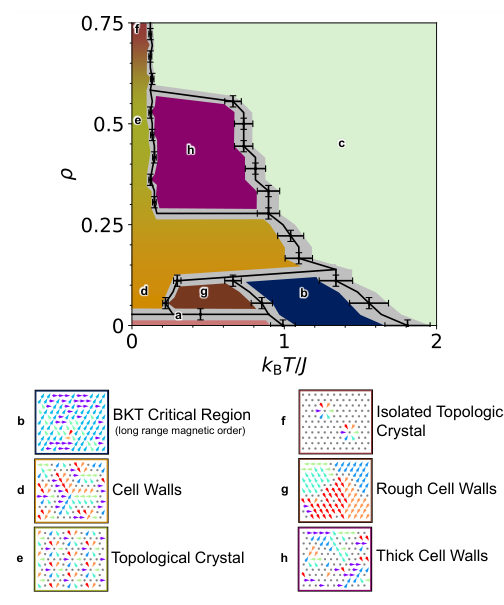
<figcaption class="paper-figure-caption"><b>Fig 2.</b> FIG. 2. Phase diagram of the SF6C model with Q = +1.</figcaption>
</figure>
<figure class="paper-figure-card">
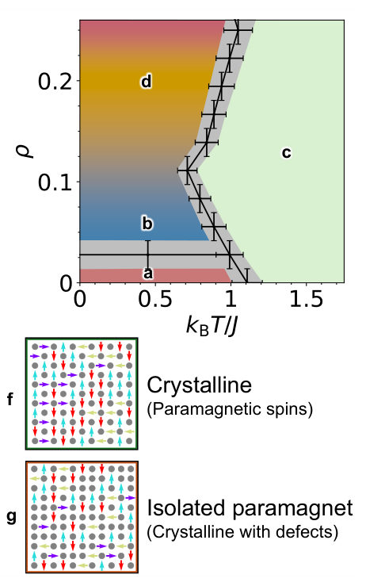
<figcaption class="paper-figure-caption"><b>Fig 3.</b> FIG. 3. Phase diagram of the SF4C model with Q = +5.</figcaption>
</figure>
<figure class="paper-figure-card">
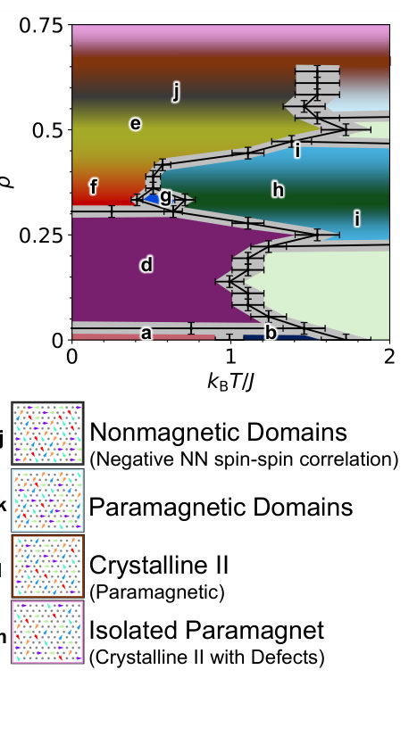
<figcaption class="paper-figure-caption"><b>Fig 4.</b> FIG. 4. Phase diagram of the SF6C model with Q = +5.</figcaption>
</figure>
<figure class="paper-figure-card">
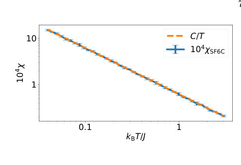
<figcaption class="paper-figure-caption"><b>Fig 5.</b> FIG. 6. Magnetic susceptibility χ for the SF6C model at ρ = 2</figcaption>
</figure>
</div>

<p><strong>Summary.</strong> This work investigates the phase behavior of solute-frustrated $q$-clock models by coupling spin dynamics with mobile, interacting ions. Using Monte Carlo simulations and theoretical mappings, the authors demonstrate that frustration and topology lead to complex phase diagrams, including novel low-temperature states and defect-driven crystallization. This guides the design of materials leveraging these competing interactions.</p>
<p><strong>Why it may be interesting.</strong> The combination of topological constraints and frustration in a lattice model provides a rich playground for studying non-equilibrium phase transitions, which has parallels in understanding complex quantum materials or frustrated quantum magnets.</p>
<details>
<summary>Detailed structure</summary>
<p><strong>Main problem.</strong> The study aims to understand the complex interplay between geometric frustration and topological constraints on the phase behavior of interacting lattice systems.</p>
<p><strong>Main result.</strong> The solute-frustrated $q$-clock (SF$q$C) models exhibit rich phase diagrams featuring low-temperature phases, strongly frustrated domains, and evidence that topological defects can drive crystallization.</p>
<p><strong>Method.</strong> The research employs Monte Carlo simulations (including parallel tempering) and theoretical mapping techniques to derive effective Hamiltonians for the system.</p>
<p><strong>Model / system.</strong> The system is the SF$q$C model, which combines a $q$-clock spin model with mobile, interacting charged solutes (ions). The Hamiltonian includes spin-spin, spin-ion, and ion-ion interaction terms, leading to frustration.</p>
<p><strong>Key observables.</strong> Phase diagram structure, order parameters ($K_4, K_6$), ion-ion heat capacity (for crystallization detection), and the Helmholtz free energy.</p>
<p><strong>Important parameters / regimes.</strong> The key parameters include the clock number $q$ ($q=4, 6$), ion density ($
ho$), temperature ($T$), and coupling constants ($J, K, L$).</p>
<p><strong>Assumptions / limitations.</strong> The analysis sometimes relies on a mean-field approach (MFT) when calculating free energy, which limits the ability to account for certain types of topological crystal formation.</p>
<p><strong>Figures summary.</strong> Not specified, but the notes indicate the analysis involves creating phase diagrams using heat capacities and order parameters.</p>
<p><strong>Paper structure.</strong> The paper introduces the SF$q$C model, details the Hamiltonian, presents simulation methods (MC), analyzes specific cases ($q=4, 6$), and discusses the resulting phase transitions, including mapping to effective Ising models.</p>
</details>
<details>
<summary>Abstract</summary>
<p>Frustration can enhance fluctuations and create new and interesting phase behavior. When combined with the ability to host topological defects, frustration can increase the complexity of a system's phase diagram through topological and frustrated topological transitions. To understand the interplay of frustration and topology on phase behavior, we introduce and study solute-frustrated $q$-clock (SF$q$C) models, in which solute sites are added to the $q$-clock model, a lattice model where each spin can take one of $q$ orientations. The $q$-clock model can exhibit spontaneous symmetry breaking and topological transitions, and the interaction between the spins and a solute frustrates the system, in essence by creating a fixed lower bound on the concentration of positive topological defects or vortices. We perform Monte Carlo simulations and develop theoretical descriptions of SF$q$C models with $q=4$ and $q=6$ to understand their phase behavior. We find that these systems exhibit rich phase diagrams that depend on the choice of parameters. In particular, SF$q$C models have a wide range of interesting low-temperature phases, including the presence of strongly frustrated domains and the absence of long-range order. We also find topological effects even at low temperatures; for instance, we find that topological defects can drive crystallization. We anticipate these results to guide the development of materials that take advantage of frustration and topology to tune phase behavior and fluctuations.</p>
</details>
<p><sub><a href="#top">↑ back to top</a></sub></p>

<p><a id="paper-2610.24669"></a></p>
<h3 id="spontaneous-particle-hole-symmetry-breaking-in-a-disordered-two-site-quantum-breakdown-model"><a href="http://arxiv.org/abs/2610.24669v1">Spontaneous particle-hole symmetry breaking in a disordered two-site quantum breakdown model</a></h3>
<p><strong>Authors:</strong> Kinya Guan<br>
<strong>Type:</strong> theory · <strong>Category:</strong> statistical mechanics · <strong>PDF:</strong> <a href="https://arxiv.org/pdf/2610.24669v1">https://arxiv.org/pdf/2610.24669v1</a><br>
<strong>Analysis basis:</strong> full PDF text, analyzed in chunks
<strong>Topic relevance:</strong> <code>Keldysh / 2PI / non-Gaussian methods</code> <strong>3/5</strong> · <code>methods for driven-dissipative</code> <strong>3/5</strong> · <code>analog quantum simulation</code> <strong>1/5</strong></p>
<div class="figure-strip-hint">↔ Scroll figures horizontally</div>
<div class="paper-figures-scroll">
<figure class="paper-figure-card">
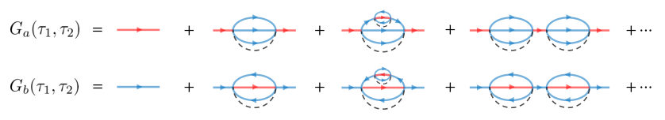
<figcaption class="paper-figure-caption"><b>Fig 1.</b> FIG. 3. Leading diagrams for the disorder-averaged Green functions at 𝑠= 3. Red and blue arrows denote free 𝑎- and 𝑏-fermion propagators, respectively, and dashed curves denote disorder contractions.</figcaption>
</figure>
<figure class="paper-figure-card">
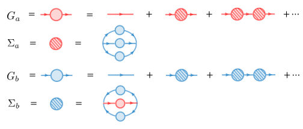
<figcaption class="paper-figure-caption"><b>Fig 2.</b> FIG. 4. Diagrammatic Schwinger–Dyson equations for 𝑠= 3. Red and blue lines denote 𝑎- and 𝑏-fermion propagators, respectively. Filled circles denote fully dressed propagators, and hatched circles denote self-energies. Lines without circles are free propagators.</figcaption>
</figure>
<figure class="paper-figure-card">
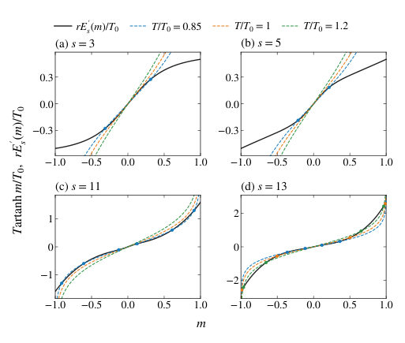
<figcaption class="paper-figure-caption"><b>Fig 3.</b> FIG. 5. The two sides of Eq. (39) for (a) 𝑠= 3, (b) 𝑠= 5, (c) 𝑠= 11, and (d) 𝑠= 13. Black curves show 𝑟𝐸′ 𝑠(𝑚)/𝑇0, and blue, orange, and green dashed curves show 𝑇artanh 𝑚/𝑇0 at 𝑇/𝑇0 = 0.85, 1, and 1.20, respectively. Circles mark the nonzero intersections.</figcaption>
</figure>
<figure class="paper-figure-card">
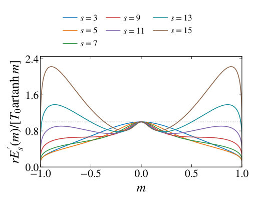
<figcaption class="paper-figure-caption"><b>Fig 4.</b> FIG. 6. The ratio 𝑟𝐸′ 𝑠(𝑚)/[𝑇0 artanh 𝑚] in Eq. (41) for 𝑠= 3, 5, 7, 9, 11, 13, 15. A horizontal line at 𝑇/𝑇0 intersects each curve at the nonzero self-consistent solutions. The dashed line marks 𝑇/𝑇0 = 1, and the values at 𝑚= 0 and 𝑚= ±1 are the continu- ous limits of the ratio.</figcaption>
</figure>
<figure class="paper-figure-card">
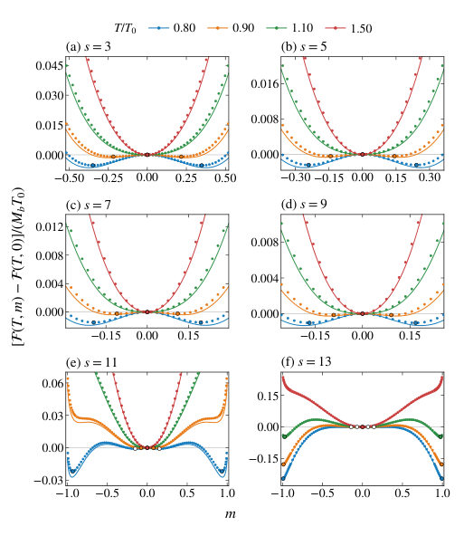
<figcaption class="paper-figure-caption"><b>Fig 5.</b> FIG. 7. Free energy at small 𝑟. Panels (a)–(f) show 𝑠= 3, 5, 7, 9, 11, 13, respectively, with 𝑠2𝑟 = 0.045. Dots show [F (𝑇, 𝑚) −F (𝑇, 0)]/(𝑀𝑏𝑇0) obtained from the full Schwinger– Dyson equations using Eq. (A17), and solid curves show Eq. (48). Blue, orange, green, and red correspond to 𝑇/𝑇0 = 0.80, 0.90, 1.10, 1.50, respectively. Filled and open black-edged cir- cles mark the lowest minima and the higher local minima, respec- tively.</figcaption>
</figure>
</div>

<p><strong>Summary.</strong> This paper theoretically analyzes spontaneous particle-hole symmetry breaking in a disordered two-site quantum breakdown model. Using advanced techniques like Schwinger-Dyson equations in the large-mode limit, the authors determine that the system undergoes a finite-temperature phase transition. The results characterize the transition type and calculate the critical exponents, providing insights into symmetry restoration in disordered quantum matter.</p>
<p><strong>Why it may be interesting.</strong> The study of symmetry breaking transitions in interacting quantum many-body systems, particularly those involving disorder and particle-hole symmetry, is central to understanding critical phenomena in condensed matter physics.</p>
<details>
<summary>Detailed structure</summary>
<p><strong>Main problem.</strong> The study investigates the spontaneous breaking of particle-hole symmetry in a disordered two-site quantum breakdown model.</p>
<p><strong>Main result.</strong> The model exhibits a finite-temperature phase transition, which can be continuous or first-order depending on system parameters, with the order parameter exponent found to be close to 1/2 in certain regimes.</p>
<p><strong>Method.</strong> The analysis employs the large-mode limit, solving the problem via Schwinger-Dyson equations and calculating the free energy difference to locate the ground state.</p>
<p><strong>Model / system.</strong> The system is a disordered two-site quantum breakdown model whose Hamiltonian possesses particle-hole symmetry. The analysis is performed using fermionic modes on two sites, $a$ and $b$, and is solvable in the limit of a large number of fermionic modes.</p>
<p><strong>Key observables.</strong> The order parameter, $m = G_b(eta^-) - G_b(0^+)$, measures the deviation from particle-hole symmetry; the free energy $F(T, m)$ determines the equilibrium state.</p>
<p><strong>Important parameters / regimes.</strong> The ratio of fermionic modes $r = M_a/M_b$, the temperature $T$, and the odd integer $s$ governing the interactions are key parameters.</p>
<p><strong>Assumptions / limitations.</strong> The analysis relies on the large-mode limit ($M_a, M_b 	o \infty$) and various approximations when solving the Schwinger-Dyson equations.</p>
<p><strong>Figures summary.</strong> Figures illustrate the model setup, diagrammatic expansions, and compare free energy calculations derived from the full Schwinger-Dyson equations against analytical approximations for various values of $s$.</p>
<p><strong>Paper structure.</strong> The paper progresses by establishing the symmetry properties, deriving the self-consistency equations for the order parameter $m$ in the large-mode limit, analyzing the free energy landscape to determine the nature of the phase transition (continuous vs. first-order), and extending these results to higher values of the interaction parameter $s$.</p>
</details>
<details>
<summary>Abstract</summary>
<p>We study spontaneous particle-hole symmetry breaking in a disordered two-site quantum breakdown model. The model is solvable in the limit of a large number of fermionic modes on each site. For a small ratio of the numbers of modes on the two sites, we derive the free energy analytically and find a finite-temperature symmetry-breaking transition. This transition changes from continuous to first order as the number of fermions produced in each conversion increases. Numerical results show that both types of transition persist beyond this regime, with an order-parameter exponent close to $1/2$ for continuous transitions.</p>
</details>
<p><sub><a href="#top">↑ back to top</a></sub></p>

<p><a id="paper-2610.24098"></a></p>
<h3 id="performance-of-a-hot-rb-vapour-based-portable-quantum-memory"><a href="http://arxiv.org/abs/2610.24098v1">Performance of a Hot Rb Vapour-Based Portable Quantum Memory</a></h3>
<p><strong>Authors:</strong> Kenneth Gregory, Konrad Socha, Khaled Mnaymneh, Connor Kupchak<br>
<strong>Type:</strong> experiment · <strong>Category:</strong> quantum information and computing · <strong>PDF:</strong> <a href="https://arxiv.org/pdf/2610.24098v1">https://arxiv.org/pdf/2610.24098v1</a><br>
<strong>Analysis basis:</strong> full PDF text, analyzed in chunks
<strong>Topic relevance:</strong> <code>QC/QI experiment</code> <strong>3/5</strong> · <code>quantum optics experiment</code> <strong>2/5</strong> · <code>quantum measurements</code> <strong>1/5</strong></p>
<div class="figure-strip-hint">↔ Scroll figures horizontally</div>
<div class="paper-figures-scroll">
<figure class="paper-figure-card">
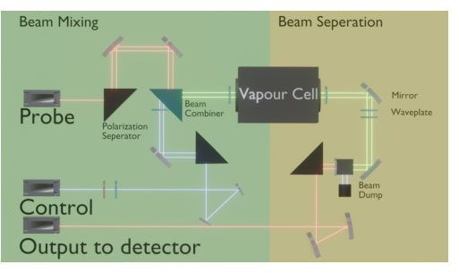
<figcaption class="paper-figure-caption"><b>Fig 1.</b> Fig. 1. Schematic diagram of the interior of the QMem system. A single tunable diode laser generates both the control and probe beams. The probe beam is detuned from the control field by the 87Rb ground state splitting frequency using an electro-optical modulator (EOM). Both fields are coupled into separate input fibre ports of the QMem system. Before passing through the vapour cell, the probe and controlfields are spatially overlapped using a prism system.(Colour changed to green for clarity)</figcaption>
</figure>
<figure class="paper-figure-card">
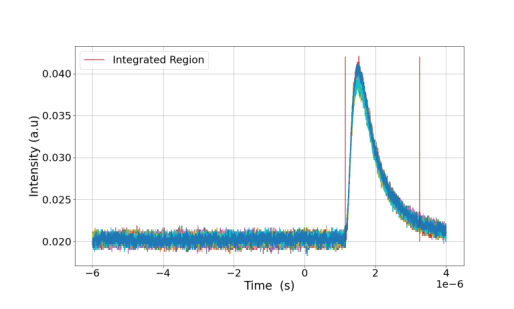
<figcaption class="paper-figure-caption"><b>Fig 2.</b> Fig. 2. Sampling of retrieved probe pulse at a storage time of 50 µs and temperature of 70◦C. The traces shown are not subject to any averaging.</figcaption>
</figure>
<figure class="paper-figure-card">
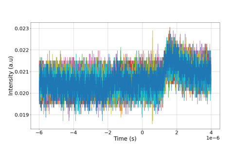
<figcaption class="paper-figure-caption"><b>Fig 3.</b> Fig. 4. Sample of noise traces for a when the control field is switched on after 1500 µs. In the data shown, the probe field is not present and the effect of atomic decoherence between the atoms is apparent starting at 1.25 µs</figcaption>
</figure>
<figure class="paper-figure-card">
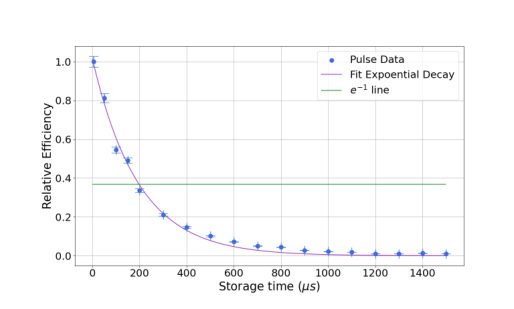
<figcaption class="paper-figure-caption"><b>Fig 4.</b> Fig. 3. Storage efficiency as a function of storage time at a vapour temperature of 70◦C. The coherence time is extracted from the fit to this curve.</figcaption>
</figure>
<figure class="paper-figure-card">
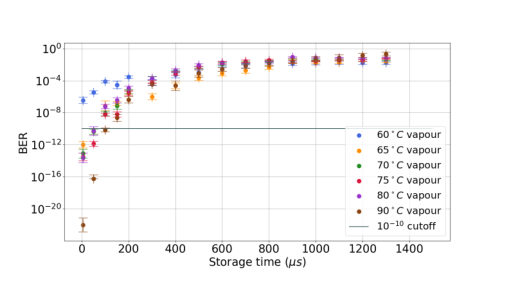
<figcaption class="paper-figure-caption"><b>Fig 5.</b> Fig. 8. The plot shows the BER versus storage time at the temperatures investigated in the QMem system. The BER values were calculated using the measured SNR values.</figcaption>
</figure>
</div>

<p><strong>Summary.</strong> This paper experimentally characterizes a portable quantum memory based on warm rubidium vapour, designed for use in quantum repeaters. The authors measure key performance indicators like coherence time, efficiency, SNR, and BER across varying temperatures. The results demonstrate that the device meets several classical communication benchmarks, marking a vital step toward integrating quantum memories into real-world quantum communication architectures.</p>
<p><strong>Why it may be interesting.</strong> This work directly addresses the hardware bottleneck for quantum networking by providing empirical data on a solid-state, scalable quantum memory platform, which is crucial for quantum information scientists.</p>
<details>
<summary>Detailed structure</summary>
<p><strong>Main problem.</strong> The primary goal is to develop portable, robust, and scalable Quantum Memory (QMem) units necessary for building functional quantum repeaters to overcome signal loss in long-distance quantum communication networks.</p>
<p><strong>Main result.</strong> The study successfully characterized the QMem performance, demonstrating that the system achieves SNR and BER values meeting classical telecommunication benchmarks under optimal conditions (e.g., 90°C, 5 $\mu$s storage time).</p>
<p><strong>Method.</strong> Performance metrics like coherence time, absolute efficiency, SNR, and BER were characterized by measuring the storage and retrieval of quantum states using a warm Rb vapour cell.</p>
<p><strong>Model / system.</strong> The system utilizes a commercial QMem based on a warm rubidium (Rb) vapour cell, operating via Electromagnetically Induced Transparency (EIT) on the D1 transition of Rb atoms.</p>
<p><strong>Key observables.</strong> Coherence time, absolute efficiency ($\eta$), Signal-to-Noise Ratio (SNR), and Bit Error Ratio (BER).</p>
<p><strong>Important parameters / regimes.</strong> Vapour temperature (60°C - 90°C), storage time (up to 100 $\mu$s), and the EIT regime.</p>
<p><strong>Assumptions / limitations.</strong> It is assumed that the classical offset observed at long storage times is due to ground state decoherence and can be accurately subtracted for coherence time fitting.</p>
<p><strong>Figures summary.</strong> Figures illustrate the setup schematic, sample retrieved pulses, storage efficiency decay vs. time/temperature, and the dependence of SNR and BER on temperature and storage time.</p>
<p><strong>Paper structure.</strong> The paper proceeds by first detailing the setup and measuring fundamental metrics like efficiency and coherence time. It then extends the analysis to calculate and report SNR and BER, comparing these results against established classical communication standards to assess quantum network viability.</p>
</details>
<details>
<summary>Abstract</summary>
<p>Quantum repeaters will be paramount to the success of the future quantum internet. Presently however, the losses incurred in fibre communications are unsustainable when fragile quantum states are transmitted over long distances. The most effective repeater nodes will require incorporation of a minimum of two quantum memory units (QMems) for successful operation. Therefore a network composed of numerous nodes will ideally require scalable repeaters that contain QMems that are portable, robust and do not require a high amount of overhead. Here we investigate the performance of a commercial QMem based on a warm vapour of Rb atoms. Specifically, we characterize the coherence time, absolute efficiency, signal to noise ratio and bit error ratio of this device over a range of vapour temperatures that are readily controllable. For our system, we place these performance metrics into the same conventions as those established for current optical communication protocols. Development of QMem systems meeting these benchmarks will be a vital step for seamless integration of QMems systems into present-day communication architectures.</p>
</details>
<p><sub><a href="#top">↑ back to top</a></sub></p>

<p><a id="paper-2610.26449"></a></p>
<h3 id="two-dimensional-quantum-droplets-in-a-mixture-of-bose-einstein-condensates"><a href="http://arxiv.org/abs/2610.26449v1">Two-Dimensional Quantum Droplets in a Mixture of Bose-Einstein Condensates</a></h3>
<p><strong>Authors:</strong> Yue Zhang, Liangchao Chen, Wei Han, Linshan Gong, Yazhou Wang, Zekui Wang, Xinhao Liang, Wenjie Sui, Pengjun Wang, Lianghui Huang, Zengming Meng, Zhuxiong Ye, Jing Zhang<br>
<strong>Type:</strong> both · <strong>Category:</strong> quantum gases · <strong>PDF:</strong> <a href="https://arxiv.org/pdf/2610.26449v1">https://arxiv.org/pdf/2610.26449v1</a><br>
<strong>Analysis basis:</strong> full PDF text, analyzed in chunks
<strong>Topic relevance:</strong> <code>analog quantum simulation</code> <strong>3/5</strong> · <code>Keldysh / 2PI / non-Gaussian methods</code> <strong>2/5</strong> · <code>methods for driven-dissipative</code> <strong>1/5</strong></p>
<div class="figure-strip-hint">↔ Scroll figures horizontally</div>
<div class="paper-figures-scroll">
<figure class="paper-figure-card">
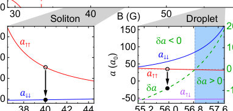
<figcaption class="paper-figure-caption"><b>Fig 1.</b> FIG. 1. (a) Schematic illustration of the quasi-2D geometry. The ultracold atoms are compressed into a quasi-2D geometry with axial confinement frequency ωz by an accordion optical lattice formed by the interference of two blue-detuned 532 nm laser beams. A red-detuned 1064 nm laser beam propagating vertically provides weak confinement with frequency ωx,y in the xy-plane. (b) Experimental sequence for the preparation of quantum droplets and Townes solitons. (c) Magnetic-field dependence of the scattering lengths near the Feshbach reso- nance. Quantum droplets are formed in a two-spin mixture with δa &lt; 0, whereas Townes solitons are created in the sin- gle |↓⟩state with a↓↓&lt; 0. The black...</figcaption>
</figure>
<figure class="paper-figure-card">
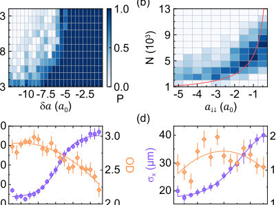
<figcaption class="paper-figure-caption"><b>Fig 2.</b> FIG. 3. (a), (b) Phase diagrams for a single stable 2D quan- tum droplet and Townes soliton, respectively, as a function of the effective mean-field scattering length and atom number. The color of each grid cell indicates the probability of success- fully preparing a single quantum droplet or Townes soliton, as determined from 10 experimental measurements. The solid red line in (b) represents the theoretical critical atom number of Townes solitons [51]. (c), (d) Atomic cloud size and peak OD as functions of the effective mean-field scattering length for the two-spin mixture and the single-spin BECs, respec- tively. Both the measurements in (c) and (d) are performed after 20 ms of evolution,...</figcaption>
</figure>
</div>

<p><strong>Summary.</strong> This paper reports the experimental observation of stable two-dimensional quantum droplets in a spin-mixture BEC, contrasting them with 2D Townes solitons formed in a single-spin state. The key finding is that the quantum droplet phase, stabilized by the LHY effect, exhibits superior stability across a broader parameter space than the solitons. This advances the understanding of self-bound states in low-dimensional quantum gases.</p>
<p><strong>Why it may be interesting.</strong> This work provides crucial experimental and theoretical benchmarks for understanding non-linear dynamics in quantum liquids, particularly highlighting how dimensionality and beyond-mean-field corrections (LHY) dictate the stability of exotic self-bound quantum states.</p>
<details>
<summary>Detailed structure</summary>
<p><strong>Main problem.</strong> The study investigates the formation and stability of two-dimensional (2D) quantum droplets and Townes solitons in Bose-Einstein Condensates (BECs) confined to a quasi-2D geometry.</p>
<p><strong>Main result.</strong> The authors demonstrate that 2D quantum droplets, formed in a spin mixture, are significantly more stable and robust over a wider parameter range compared to 2D Townes solitons.</p>
<p><strong>Method.</strong> The research combines experimental realization using ultracold atoms in optical lattices with theoretical analysis of the energy functional using variational ansatze.</p>
<p><strong>Model / system.</strong> The system involves a Bose-Einstein Condensate mixture in a quasi-2D geometry, governed by mean-field interactions augmented by the Lee-Huang-Yang (LHY) correction. Two distinct self-bound states are studied: quantum droplets (in a two-spin mixture) and Townes solitons (in a single spin state).</p>
<p><strong>Key observables.</strong> Droplet size, lifetime, relative spin population ratio ($N_{\uparrow}/N_{\downarrow}$), and the energy functional $E(\sigma)$ vs. condensate width $\sigma$.</p>
<p><strong>Important parameters / regimes.</strong> The sign of the effective scattering length ($\delta a < 0$ for droplets; $a_{\downarrow\downarrow} < 0$ for solitons) and the dimensionality (quasi-2D).</p>
<p><strong>Assumptions / limitations.</strong> The analysis relies on the frozen-mode approximation for the quasi-2D geometry and uses Gaussian ansatze to approximate the energy functional.</p>
<p><strong>Figures summary.</strong> Figures show absorption images comparing gaseous BECs, quantum droplets, and Townes solitons; phase diagrams map stability regions based on scattering lengths and atom numbers; and energy plots illustrate the critical behavior distinguishing the two types of self-bound states.</p>
<p><strong>Paper structure.</strong> The paper first establishes the experimental setup and the physical basis for quantum droplets and solitons in 2D. It then compares the stability of the two states, showing the LHY effect grants superior robustness to the quantum droplets compared to the critically dependent Townes solitons.</p>
</details>
<details>
<summary>Abstract</summary>
<p>Quantum droplets represent a striking manifestation of beyond-mean-field physics, with properties that depend sensitively on dimensionality. Although quantum droplets have been experimentally realized in one and three dimensions, their realization in two dimensions has remained elusive. Here, we observe the formation of a two-dimensional (2D) quantum droplet in a quasi-2D geometry by transferring the single-component Bose-Einstein condensates (BECs) into a spin mixture in the Lee-Huang-Yang (LHY) regime, where the LHY effect evidently deviates from its three-dimensional form. We find that, in our scheme, 2D quantum droplets are more stable and exhibit longer lifetimes than previously reported quantum droplets. By instead transferring the initial BECs into another single-spin state with a negative scattering length, we generate 2D Townes solitons. A comparison between the two types of self-bound states shows that, whereas 2D Townes solitons are stable only near a critical atom number determined by the scattering length, 2D quantum droplets remain well-defined and self-bound over a much broader parameter range. These realizations of quantum droplets and Townes solitons in two dimensions provide new insights into self-bound states and open new avenues for exploring nonlinear dynamics in quantum liquids.</p>
</details>
<p><sub><a href="#top">↑ back to top</a></sub></p>

<p><a id="paper-2610.25081"></a></p>
<h3 id="dzyaloshinskii-moriya-interactions-and-deconfined-criticality-in-srcumath567mathbomath568mathmath569math"><a href="http://arxiv.org/abs/2610.25081v1">Dzyaloshinskii-Moriya interactions and deconfined criticality in SrCu$_2$(BO$_3$)$_2$</a></h3>
<p><strong>Authors:</strong> Yasir Iqbal<br>
<strong>Type:</strong> theory · <strong>Category:</strong> strongly correlated electrons · <strong>PDF:</strong> <a href="https://arxiv.org/pdf/2610.25081v1">https://arxiv.org/pdf/2610.25081v1</a><br>
<strong>Analysis basis:</strong> full PDF text, analyzed in chunks
<strong>Topic relevance:</strong> <code>analog quantum simulation</code> <strong>3/5</strong> · <code>Keldysh / 2PI / non-Gaussian methods</code> <strong>2/5</strong></p>
<div class="figure-strip-hint">↔ Scroll figures horizontally</div>
<div class="paper-figures-scroll">
<figure class="paper-figure-card">
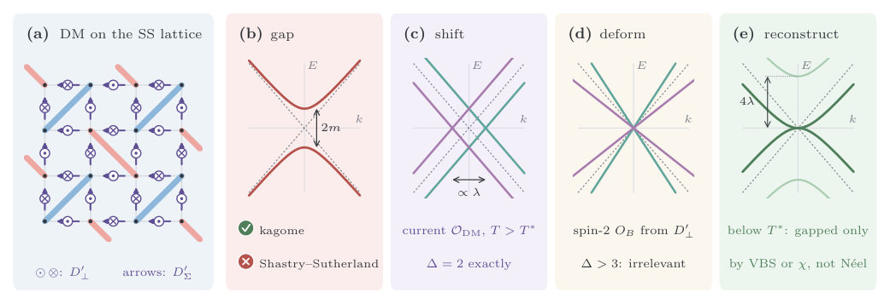
<figcaption class="paper-figure-caption"><b>Fig 1.</b> FIG. 1. Allowed and forbidden effects of DM on the spinon Dirac cones. (a) SS lattice with the [110] (blue) and [1¯10] (rose) dimers and the inter-dimer DM vectors for bonds i →j along +x and +y, drawn for D′ ⊥, D′ Σ &gt; 0. Shown are D′ ⊥(⊙/⊗) and the in-plane component along each bond’s tetragonal axis, which sets D′ Σ; the other in-plane component, which does not enter λ, and the intra-dimer D are omitted. (b)–(e) Band cuts through a Dirac node, with the unperturbed cone dashed. (b) A mass opens a gap. DM does this on kagome [32] but not on the SS lattice, where every gauge-singlet mass is forbidden (Table I). (c) Among gauge-singlet bilinears the in-plane couplings induce only λODM, a...</figcaption>
</figure>
<figure class="paper-figure-card">
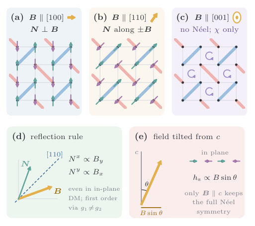
<figcaption class="paper-figure-caption"><b>Fig 2.</b> FIG. 2. Field selection rule for the staggered moment N = P</figcaption>
</figure>
</div>

<p><strong>Summary.</strong> This theoretical study analyzes the role of Dzyaloshinskii-Moriya interactions in the quantum magnet $ ext{SrCu}_2(    ext{BO}_3)_2$, a key candidate for deconfined criticality. Using gauge theory and symmetry analysis, the authors demonstrate that these interactions do not gap the spinon continuum, confirming the material's status as a platform for exotic quantum phases. The work provides detailed predictions regarding the nature of the resulting quantum ground state.</p>
<p><strong>Why it may be interesting.</strong> This work provides a deep theoretical understanding of how specific microscopic interactions (DM) interact with underlying symmetries to stabilize exotic quantum phases, which is crucial for understanding strongly correlated materials relevant to quantum simulation.</p>
<details>
<summary>Detailed structure</summary>
<p><strong>Main problem.</strong> The study investigates the role of Dzyaloshinskii-Moriya (DM) interactions in determining the nature of deconfined criticality in the quantum magnet $    ext{SrCu}_2(    ext{BO}_3)_2$. The core question is whether these interactions gap the system's spinon continuum.</p>
<p><strong>Main result.</strong> The symmetry analysis shows that time reversal and lattice symmetries forbid any gauge-singlet spinon mass, meaning the system remains a platform for deconfined criticality. In-plane DM couplings reconstruct the Dirac nodes into a quadratic band touching, while out-of-plane couplings are irrelevant at low orders.</p>
<p><strong>Method.</strong> The analysis employs advanced theoretical techniques, including $   ext{SU}(2)$ gauge theory, renormalization group (RG) analysis, and detailed classification of fermion bilinears under specific symmetry groups ($\mathcal{T}$ and glide operations).</p>
<p><strong>Model / system.</strong> The system is the $ ext{SrCu}_2(    ext{BO}_3)_2$ antiferromagnet, modeled using an $   ext{SU}(2)$ gauge theory framework that incorporates Heisenberg exchange and DM couplings. The theoretical machinery analyzes emergent $    ext{SO}(5)$ symmetry.</p>
<p><strong>Key observables.</strong> Gauge-singlet fermion masses (Néel, VBS, chirality), spinon Dirac cones, and the magnetic field dependence of the staggered moment ($\mathbf{N}$ vs $\mathbf{B}$).</p>
<p><strong>Important parameters / regimes.</strong> Critical temperature scale $T^* \simeq 0.03-0.17$ K; the relevance of DM coupling strengths ($\lambda$); and the symmetry constraints imposed by $\mathcal{T}$ and lattice operations.</p>
<p><strong>Assumptions / limitations.</strong> The analysis assumes the validity of the $   ext{SU}(2)$ gauge theory description and relies heavily on symmetry constraints derived from the spin-orbit-locked symmetry group.</p>
<p><strong>Figures summary.</strong> Figures illustrate the effect of DM on spinon Dirac cones, showing the reconstruction into a quadratic band touching. Tables summarize the action of symmetries on various fermion bilinears, confirming which order parameters are forbidden or induced.</p>
<p><strong>Paper structure.</strong> The paper proceeds by establishing the theoretical framework using gauge theory and symmetry analysis. It systematically classifies symmetry-allowed order parameters, analyzes the effect of in-plane versus out-of-plane DM couplings, and concludes by confirming the persistence of the deconfined critical state.</p>
</details>
<details>
<summary>Abstract</summary>
<p>SrCu$_2$(BO$_3$)$_2$ is the leading candidate for deconfined criticality, yet theories of its critical regime omit the Dzyaloshinskii-Moriya (DM) interactions, which gap the kagome Dirac spin liquid. Adding them to the SU(2) gauge theory, we show that time reversal and a spin-orbit-locked glide forbid any gauge-singlet spinon mass to all orders. In-plane DM only twists the spinons, reconstructing the nodes below $0.03$-$0.17$ K, while out-of-plane DM is irrelevant and SO(5) anisotropy arises only at second order. The material thus remains a platform for deconfined criticality, which NMR can test, since a $[100]$ field induces a Néel moment and a $[001]$ field does not.</p>
</details>
<p><sub><a href="#top">↑ back to top</a></sub></p>

<p><a id="paper-2610.25082"></a></p>
<h3 id="dzyaloshinskii-moriya-interactions-in-the-su2-gauge-theory-of-the-shastry-sutherland-dirac-spin-liquids"><a href="http://arxiv.org/abs/2610.25082v1">Dzyaloshinskii-Moriya interactions in the SU(2) gauge theory of the Shastry-Sutherland Dirac spin liquids</a></h3>
<p><strong>Authors:</strong> Yasir Iqbal<br>
<strong>Type:</strong> theory · <strong>Category:</strong> strongly correlated electrons · <strong>PDF:</strong> <a href="https://arxiv.org/pdf/2610.25082v1">https://arxiv.org/pdf/2610.25082v1</a><br>
<strong>Analysis basis:</strong> full PDF text, analyzed in chunks
<strong>Topic relevance:</strong> <code>analog quantum simulation</code> <strong>3/5</strong> · <code>Keldysh / 2PI / non-Gaussian methods</code> <strong>2/5</strong></p>
<div class="figure-strip-hint">↔ Scroll figures horizontally</div>
<div class="paper-figures-scroll">
<figure class="paper-figure-card">
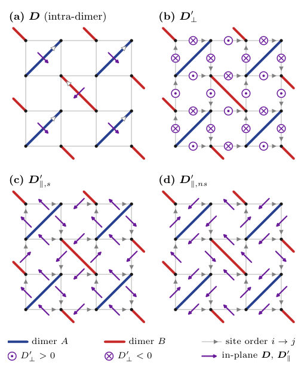
<figcaption class="paper-figure-caption"><b>Fig 1.</b> FIG. 1. Symmetry-allowed DM textures on the SS lattice, generated as the null space of the spin–orbit-locked space- group action on bond-vector space. They agree bond by bond with Ref. [27] (all panels, panel (d) through its Supplemen- tary Note 1) and Ref. [26] (panel (b)): (a) the intra-dimer D, (b) the out-of-plane inter-dimer D′ ⊥, (c),(d) the staggered and non-staggered in-plane inter-dimer components D′ ∥,s, D′ ∥,ns. Blue/red: dimer orientations A/B; small arrowheads (white- filled on the dimers, gray on the inter-dimer bonds): site or- dering i →j in Si × Sj; circled dot/cross: the sign of the D′ ⊥ mode on that bond, +1 (out of the plane) or −1 (into the plane); violet arrows:...</figcaption>
</figure>
<figure class="paper-figure-card">
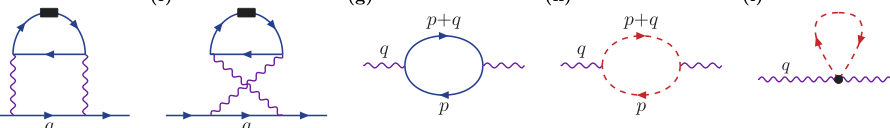
<figcaption class="paper-figure-caption"><b>Fig 2.</b> FIG. 2. Diagrams of the large-N sector (Appendix O). Solid indigo lines are spinons (Majorana-matrix fermions), wavy violet lines the SU(2) gauge field with the induced propagator Dµν, dashed red lines the adjoint Higgs fields, the black box a flavored operator insertion and the crossed box its seagull vertex. Top row, O(1/N) renormalization of a flavored bilinear: (a) fermion self-energy, giving s, with external momentum k and internal momentum k + q. (b) Vertex correction with the operator inserted at momentum transfer k2 −k1, giving vscalar, vJ or vmain 2 according to the insertion. (c),(d) The two seagull graphs of the covariant-derivative operator, vsg 2 (labeled L and R for the left...</figcaption>
</figure>
<figure class="paper-figure-card">
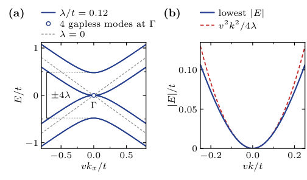
<figcaption class="paper-figure-caption"><b>Fig 3.</b> FIG. 3. Node reconstruction by λ ODM at the π-flux point. (a) Spectrum of h(k) = v(kxρx −kyρz)+λhDM, with hDM the node matrix of ODM, along ky = 0 at λ/t = 0.12 (solid; every band is doubly degenerate, so the eight bands appear as four curves) and the λ = 0 Dirac cone (dashed): two branches split to ±4λ (bracket); four modes stay gapless at Γ (open circle). (b) The residual dispersion (solid) is an isotropic quadratic band touching, |E| ≃v2k2/4λ (dashed). Energies and mo- menta are plotted in units of t (E/t, vkx/t, vk/t).</figcaption>
</figure>
<figure class="paper-figure-card">
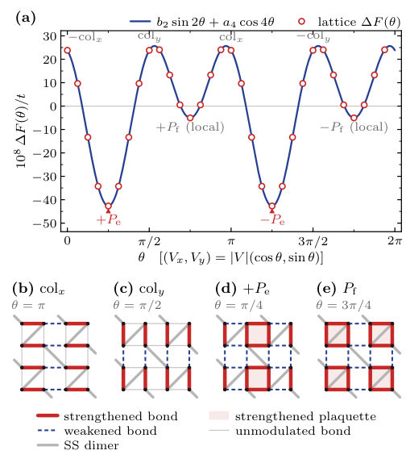
<figcaption class="paper-figure-caption"><b>Fig 4.</b> FIG. 4. Selection within the VBS doublet. (a) Lattice free energy ∆F(θ) on the (Vx, Vy) = |V |(cos θ, sin θ) circle at d = 0.6, m = 0.05 (circles), lying on the two allowed harmonics b2 sin 2θ + a4 cos 4θ (line; b2 = −18.82 × 10−8 t, a4 = +23.84 × 10−8 t); the forbidden harmonics vanish. The global minima of this determinant contribution (red triangles) are the two empty-plaquette states ±Pe (θ = π/4, 5π/4), one on each void sublattice. The full-plaquette directions ±Pf (θ = 3π/4, 7π/4) are only shallow local minima at d = 0.6. Gray labels mark the columnar directions. (b)–(e) The four lattice states colx, coly, +Pe, Pf with their θ (thick red: strengthened bonds; dashed indigo: weakened;...</figcaption>
</figure>
<figure class="paper-figure-card">
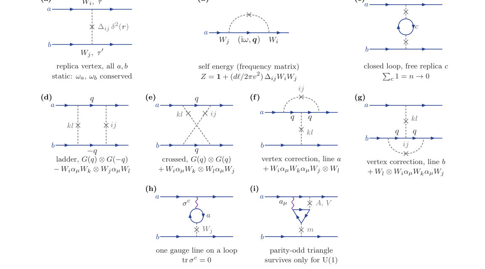
<figcaption class="paper-figure-caption"><b>Fig 5.</b> FIG. 6. One-loop diagrams of the replicated static-disorder problem, in the spinon basis ψ = (Dirac)⊗(valley)⊗(spin) in which all 36 singlets are number conserving. Solid indigo lines: ⟨ψψ†⟩= (iω + H)/(ω2 + v2k2); a, b, c are replica indices. Gray dashed lines with ×: the static correlator ∆ijδ2(r), which transfers momentum but no frequency. Matrix products are read against the arrow, and ij, kl mark the covariance entries. (a) Replica vertex −1</figcaption>
</figure>
</div>

<p><strong>Summary.</strong> This theoretical work investigates the impact of Dzyaloshinskii-Moriya interactions on the SU(2) gauge theory describing Shastry-Sutherland Dirac spin liquids. Using advanced field theory techniques, the authors show that these interactions constrain the low-energy spectrum, predicting a transition into either a valence-bond ordered state or a gapped $\mathbb{Z}_2$ spin liquid below a characteristic temperature scale $T^*$. This provides a detailed theoretical roadmap for understanding quantum criticality in frustrated quantum magnets.</p>
<p><strong>Why it may be interesting.</strong> The detailed analysis of symmetry constraints and the resulting low-energy effective field theory provides deep insights into how subtle interactions like DM terms dictate the fate of quantum critical points in frustrated magnets.</p>
<details>
<summary>Detailed structure</summary>
<p><strong>Main problem.</strong> The paper classifies fermion bilinears within the SU(2) gauge theory describing Shastry-Sutherland Dirac spin liquids, focusing on the role of Dzyaloshinskii-Moriya (DM) interactions.</p>
<p><strong>Main result.</strong> DM interactions forbid local gauge-singlet fermion masses, and the system's low-energy physics is characterized by a crossover scale $T^*$ followed by a flow ending on either a valence-bond ordered ray or a gapped chiral $\mathbb{Z}_2$ spin liquid.</p>
<p><strong>Method.</strong> The analysis employs theoretical techniques including classifying fermion bilinears under a specific space group, treating DM interactions at leading order in $1/N$, and performing one-loop renormalization group flow calculations.</p>
<p><strong>Model / system.</strong> The study models the magnetic properties of the Shastry-Sutherland lattice, exemplified by the material $\text{SrCu}_2(\text{BO}_3)_2$, using an SU(2) gauge theory framework.</p>
<p><strong>Key observables.</strong> Conserved spin current of dimension 2, crossover scales $T^*$ and $T^{**}$, and the nature of the reconstructed Dirac cones (e.g., $d$-wave quadratic band touching).</p>
<p><strong>Important parameters / regimes.</strong> The DM interaction strength, the lattice coupling constants ($J, J'$), and external magnetic fields applied along [100] or [001].</p>
<p><strong>Assumptions / limitations.</strong> The analysis relies on treating DM interactions perturbatively at leading order in $1/N$ and at one loop, and assumes the validity of the continuum gauge theory description.</p>
<p><strong>Figures summary.</strong> The notes mention figures detailing symmetry-allowed DM textures on the SS lattice, which dictate the allowed coupling patterns.</p>
<p><strong>Paper structure.</strong> The paper is structured by first setting up the model Hamiltonian including DM terms, then performing symmetry analysis to constrain allowed DM textures, followed by deriving the low-energy effective theory via gauge theory and RG flow analysis.</p>
</details>
<details>
<summary>Abstract</summary>
<p>We classify the fermion bilinears of the SU(2) gauge theory of the Shastry-Sutherland Dirac spin liquids under the spin-orbit-locked space group and treat the Dzyaloshinskii-Moriya (DM) interactions of SrCu$_2$(BO$_3$)$_2$ at leading order in $1/N$ and at one loop. At linear order DM can neither gap the spinons nor destabilize the SO(5) point above a scale $T^*$. Symmetry forbids every local gauge-singlet fermion mass at any order. Among the singlet bilinears, the in-plane couplings induce only a conserved spin current of dimension exactly 2, which sets $T^*=4λ\simeq0.03$-$0.17$ K, and the out-of-plane coupling only a flavored spin-2 current, irrelevant at a unitary critical point. DM-induced Yukawa couplings start below $2\%$ of the one that bounds the pseudocritical window. In zero field, measured samples order above $1$ K, at or above $T^*$. Below $T^*$, in a two-dimensional sample at the critical pressure, the Dirac cones reconstruct into a chirally protected $d$-wave quadratic band touching whose only gauge-singlet gap channels are the two valence-bond components and the scalar chirality. A one-loop flow, with the gauge field screened by the band touching, ends at $T^{**}\sim(0.03$-$0.1)λ$ on a ray containing valence-bond order for the material's exchange and for most random couplings, and otherwise on a gapped chiral $\mathbb{Z}_2$ spin liquid. The DM bias between the two plaquette patterns is at most of order $10^{-4}$, with a direction not fixed at $O(1/N)$, whereas non-magnetic quenched disorder couples a relevant random field to the plaquette doublet and none to the chirality. A field along $[100]$ induces a $(π,π)$ Néel moment linear in the field; a field along $[001]$ does not. This selection rule also holds in the dimer phase and is testable by $^{11}$B NMR under pressure.</p>
</details>
<p><sub><a href="#top">↑ back to top</a></sub></p>

<p><a id="paper-2610.26135"></a></p>
<h3 id="evidence-of-valence-bond-solid-and-quantum-paramagnetism-in-the-math615math-math616math-math617math-heisenberg-model-from-pseudofermion-functional-renormalization-group"><a href="http://arxiv.org/abs/2610.26135v1">Evidence of valence bond solid and quantum paramagnetism in the $J_1$--$J_2$--$J_3$ Heisenberg model from pseudofermion functional renormalization group</a></h3>
<p><strong>Authors:</strong> Gün Günal, Erhai Zhao, Ahmet Keleş<br>
<strong>Type:</strong> theory · <strong>Category:</strong> strongly correlated electrons · <strong>PDF:</strong> <a href="https://arxiv.org/pdf/2610.26135v1">https://arxiv.org/pdf/2610.26135v1</a><br>
<strong>Analysis basis:</strong> full PDF text, analyzed in chunks
<strong>Topic relevance:</strong> <code>analog quantum simulation</code> <strong>3/5</strong> · <code>Keldysh / 2PI / non-Gaussian methods</code> <strong>2/5</strong></p>
<div class="figure-strip-hint">↔ Scroll figures horizontally</div>
<div class="paper-figures-scroll">
<figure class="paper-figure-card">
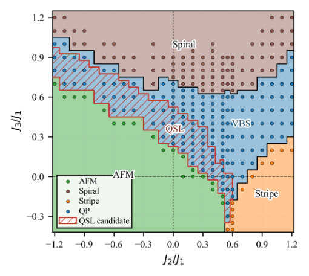
<figcaption class="paper-figure-caption"><b>Fig 1.</b> FIG. 1. Phase diagram of the J1–J2–J3 model on square lattice obtained with pf-fRG where each dot represents an independent calculation. The colors correspond to the iden- tified phases: antiferromagnetic (AFM) order in green, stripe order in orange, spiral order in brown, and the quantum para- magnetic (QP) regime in blue. We distinguish two different QP phases: candiate qauntum spin liquid (QSL) and valence bond solid (VBS), separated with red dashed area, by moni- toring the dimer susceptibility flows (see main text).</figcaption>
</figure>
<figure class="paper-figure-card">
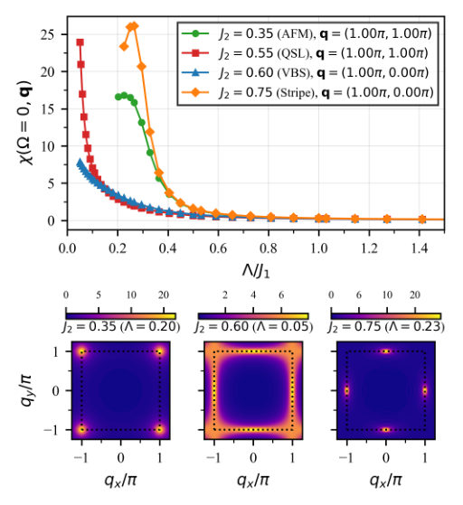
<figcaption class="paper-figure-caption"><b>Fig 2.</b> FIG. 2. Static spin susceptibility in the J1–J2 model. Up- per panel: flow of χΛ(q) in the leading momentum channel for representative points in the AFM phase (J2/J1 = 0.35, green), the candidate QSL regime (J2/J1 = 0.55, red), the VBS regime (J2/J1 = 0.60, blue), and the stripe phase (J2/J1 = 0.75, orange). The magnetically ordered phases exhibit an instability that terminates the flow at a critical scale Λc, whereas within the QP window the susceptibility flows smoothly down to the lowest scale Λ = 0.05J1. Lower panel: the corresponding momentum-resolved susceptibility χΛ(q) evaluated at the end of the flow.</figcaption>
</figure>
<figure class="paper-figure-card">
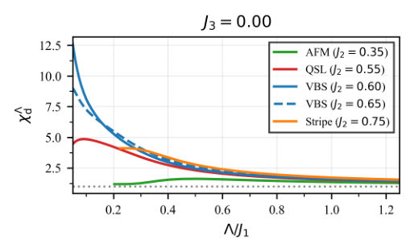
<figcaption class="paper-figure-caption"><b>Fig 3.</b> FIG. 3. Renormalization flow of the dimer susceptibility χΛ d in the J1–J2 model for selected values of J2. The horizontal gray dotted line marks the unperturbed initial value χd = 1. In the AFM phase (J2/J1 = 0.35, green) the perturbation is sup- pressed before the flow breaks down. In the frustrated regime (J2/J1 = 0.55, red), χΛ d grows initially but is ultimately sup- pressed at low energy scales. In the VBS regime, it instead displays a significant enhancement down to the lowest scales smoothly, (J2/J1 = 0.60 and 0.65, solid and dashed blue, re- spectively). In the stripe phase (J2/J1 = 0.75, orange), the dimer susceptibility plateaus and the magnetic instability ter- minates the flow.</figcaption>
</figure>
<figure class="paper-figure-card">
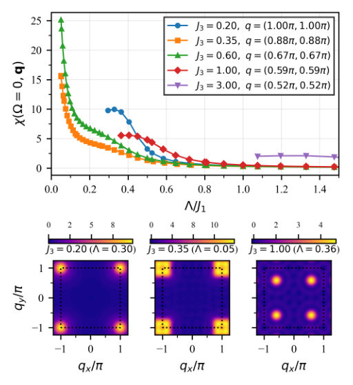
<figcaption class="paper-figure-caption"><b>Fig 4.</b> FIG. 4. Static spin susceptibility along the J2 = 0 cut. Up- per panel: flow of χΛ(q) in the leading momentum channel for representative points in the AFM phase (J3/J1 = 0.2), the QP regime (J3/J1 = 0.35 and 0.6), and the spiral phase (J3/J1 = 1.0 and 3.0). The magnetically ordered phases ex- hibit an instability that terminates the flow at a critical scale Λc, whereas within the QP window the susceptibility flows smoothly down to the lowest scale Λ = 0.05J1. Lower panel: the corresponding momentum-resolved susceptibility χΛ(q) for the AFM (J3/J1 = 0.2), the QP (J3/J1 = 0.35), and spiral (J3/J1 = 1.0) states, with the susceptibility profiles evaluated at the end of the flow.</figcaption>
</figure>
<figure class="paper-figure-card">
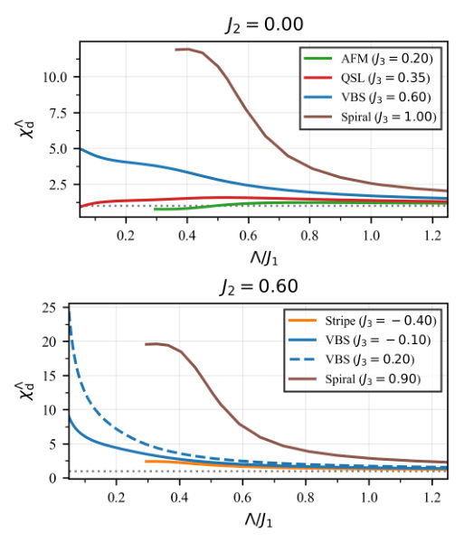
<figcaption class="paper-figure-caption"><b>Fig 5.</b> FIG. 5. The flow of the dimer susceptibility χΛ d for selected points. The gray dotted line indicates the unperturbed value χd = 1. The upper panel shows the J2 = 0 cut. The candi- date QSL regime (J3 = 0.35, red) is characterized by a sup- pression of χΛ d towards the end of the flow. In contrast, the VBS phase (J3 = 0.6, blue) exhibits a steady, continuous en- hancement. The AFM (J3 = 0.2, green) and spiral (J3 = 1.0, brown) phases undergo a magnetic flow breakdown at large scale Λ. The lower panel shows the J2 = 0.6 cut. The system transitions from a stripe phase (J3 = −0.4, orange) into an extended VBS phase (J3 = −0.1 blue solid line and J3 = 0.2 blue dotted line) characterized by...</figcaption>
</figure>
</div>

<p><strong>Summary.</strong> This theoretical study uses the pseudofermion Functional Renormalization Group (pf-fRG) to map the phase diagram of the $J_1$-$J_2$-$J_3$ Heisenberg model. By analyzing the flow of the dimer susceptibility, the authors resolve the Quantum Paramagnetic (QP) regime into two distinct regions: one indicative of Valence Bond Solid (VBS) order and another suggesting a Quantum Spin Liquid (QSL) candidate. This refines our understanding of quantum magnetism in frustrated lattices.</p>
<p><strong>Why it may be interesting.</strong> This work provides a detailed theoretical probe into the complex interplay between competing magnetic interactions ($J_1, J_2, J_3$) in frustrated quantum magnets, offering a sophisticated tool (pf-fRG) to differentiate between competing exotic ground states like VBS and QSL.</p>
<details>
<summary>Detailed structure</summary>
<p><strong>Main problem.</strong> The study aims to map the zero-temperature phase diagram of the $J_1$-$J_2$-$J_3$ Heisenberg model to distinguish between Quantum Spin Liquid (QSL) and Valence Bond Solid (VBS) phases within the Quantum Paramagnetic (QP) regime.</p>
<p><strong>Main result.</strong> The analysis suggests the QP window splits into two distinct regions: one characterized by continuously growing dimer susceptibility (indicating VBS order), and another showing a peak followed by suppression (suggesting a QSL candidate).</p>
<p><strong>Method.</strong> The research employs the pseudofermion Functional Renormalization Group (pf-fRG) technique, analyzing the flow of various susceptibilities as a function of the renormalization scale.</p>
<p><strong>Model / system.</strong> The system is the $J_1$-$J_2$-$J_3$ Heisenberg model defined on the square lattice, described by a Hamiltonian involving nearest-neighbor ($J_1$), next-nearest-neighbor ($J_2$), and third-nearest-neighbor ($J_3$) couplings.</p>
<p><strong>Key observables.</strong> Dimer susceptibility ($\chi_{\Lambda}^d$), static spin susceptibility ($\chi_{\Lambda}(\Omega=0)$), and the flow behavior of these quantities with the renormalization scale ($\Lambda$).</p>
<p><strong>Important parameters / regimes.</strong> The ratios $J_2/J_1$ and the inclusion of $J_3$ are critical parameters used to traverse different magnetic regimes (AFM, QP, VBS, stripe).</p>
<p><strong>Assumptions / limitations.</strong> The pf-fRG flow is truncated at the six-point level using the Katanin truncation scheme, and the detection of VBS order relies on adding a small source field ($\delta$) to break symmetry.</p>
<p><strong>Figures summary.</strong> Figures illustrate the phase diagram across different couplings, showing how the flow of dimer susceptibility ($\chi_{\Lambda}^d$) changes qualitatively across the QP window, distinguishing between continuous growth (VBS) and peaking/suppression (QSL candidate).</p>
<p><strong>Paper structure.</strong> The paper systematically investigates the phase diagram by analyzing the flow of susceptibilities using pf-fRG. It first establishes the general phase boundaries and then uses the dimer susceptibility flow to resolve the QP regime into distinct VBS and QSL-like regions.</p>
</details>
<details>
<summary>Abstract</summary>
<p>Motivated by recent tensor network studies reporting a quantum spin liquid (QSL) within the quantum paramagnetic (QP) regime, we investigate numerically the zero-temperature phase diagram of the $J_1$--$J_2$--$J_3$ Heisenberg model on the square lattice using the pseudofermion functional renormalization group (pf-fRG). Thanks to improved frequency resolution and larger lattice truncations, we are able to explore a significantly larger parameter space than previous pf-fRG work to map out the phase boundary of an extended QP region. We further resolve possible bond order within the QP regime by measuring the dimer response to small deformations in $J_1$, i.e. bond anisotropy that breaks the point-group symmetry of the Hamiltonian. The functional renormalization group flow of the dimer susceptibility suggests that the QP window splits into two: a region where it grows continuously down to the lowest energy scale to signal valence bond solid (VBS) order, and another region where it reaches a peak at a finite scale and is subsequently suppressed to indicate a QSL.</p>
</details>
<p><sub><a href="#top">↑ back to top</a></sub></p>

<p><a id="paper-2610.26082"></a></p>
<h3 id="lidar-with-optically-amplified-thermal-light"><a href="http://arxiv.org/abs/2610.26082v1">LIDAR with Optically Amplified Thermal Light</a></h3>
<p><strong>Authors:</strong> Darren Ming Zhi Koh, Peng Kian Tan, Christian Kurtsiefer<br>
<strong>Type:</strong> experiment · <strong>Category:</strong> other · <strong>PDF:</strong> <a href="https://arxiv.org/pdf/2610.26082v1">https://arxiv.org/pdf/2610.26082v1</a><br>
<strong>Analysis basis:</strong> full PDF text, analyzed in chunks
<strong>Topic relevance:</strong> <code>quantum optics experiment</code> <strong>3/5</strong> · <code>interference shaping light</code> <strong>1/5</strong> · <code>quantum measurements</code> <strong>1/5</strong></p>
<div class="figure-strip-hint">↔ Scroll figures horizontally</div>
<div class="paper-figures-scroll">
<figure class="paper-figure-card">

<figcaption class="paper-figure-caption"><b>Fig 1.</b> FIG. 1. Comparison of brightness and spectral widths of dif- ferent thermal light sources. Light sources in the green region have unresolvable intensity fluctuations. Light sources in the purple region are dimmer than the ASE of an optical ampli- fier, assuming a uniform ASE spectral density of 1 µW/nm. Amplifiable light sources with resolvable coherence time are in the white region. Microsphere suspension (MS) and ro- tating ground glass (RGG) are pseudothermal light sources whose intensity fluctuation arise from scattering light through a time-varying dispersive medium. As such, their coherence time do not depend on their spectral width. SLD: superlumi- nescent diode.</figcaption>
</figure>
<figure class="paper-figure-card">

<figcaption class="paper-figure-caption"><b>Fig 2.</b> FIG. 3. Comparison of optical spectra and g(2)(τ) at differ- ent stages of amplification. The spectral resolution is limited to 4 GHz by the spectrometer. Broad peaks at 1530 nm and 1560 nm at B and C are due to the uncorrelated ASE from the EDFA. The extracted g(2)(τ) has a floor at g(2) = 1 cor- responding to accidental coincidences of 8900 counts per time bin. Error bars are based on Poissonian counting statistics of √</figcaption>
</figure>
<figure class="paper-figure-card">

<figcaption class="paper-figure-caption"><b>Fig 3.</b> FIG. 5. Extracted g(2)(τ) for three different points (x, y) highlighted in red in Fig. 4. (2,12) floodlights, (9,7) middle protrusion of the building and (18,15) top right corner of the building. The g(2)(τd) peaks can be clearly identified at a time delay of 1.43 µs, 8.80 µs, and 8.93 µs, respectively.</figcaption>
</figure>
<figure class="paper-figure-card">

<figcaption class="paper-figure-caption"><b>Fig 4.</b> FIG. 4. Top: Photo of the building and floodlights. Bottom: Results of a 21 pixel x 21 pixel raster scan. The building is about 1.3 km away, with lights in the foreground about 215 m away. White pixels have insufficient return photoevents to identify the peak in g(2)(τ) with sufficient SNR.</figcaption>
</figure>
</div>

<p><strong>Summary.</strong> This paper demonstrates that amplified thermal light can be effectively used for long-range LIDAR applications. The authors prove that the key quantum signature, the second-order coherence function g^(2)(τ), remains intact after optical amplification. This allowed them to successfully map a building at 1.3 km with high depth resolution.</p>
<p><strong>Why it may be interesting.</strong> This work directly addresses the practical application of quantum light sources (thermal light) by overcoming fundamental limitations (low spectral density) through amplification, which is a key topic in quantum optics and quantum sensing.</p>
<details>
<summary>Detailed structure</summary>
<p><strong>Main problem.</strong> The primary challenge is utilizing thermal light for practical applications like LIDAR, which is limited by the low spectral density of the light source.</p>
<p><strong>Main result.</strong> The authors successfully demonstrated a LIDAR raster scan of a building at 1.3 km with a depth resolution of 2 cm using amplified thermal light.</p>
<p><strong>Method.</strong> The experiment involved characterizing the normalized second-order coherence function, g^(2)(τ), of amplified thermal light and using this property to measure distances via time-of-flight measurements.</p>
<p><strong>Model / system.</strong> The system uses thermal light, which is amplified (e.g., via EDFA) to boost brightness. The coherence properties are analyzed using the normalized second-order coherence function, g^(2)(τ), which is shown to be preserved after amplification.</p>
<p><strong>Key observables.</strong> Normalized second-order coherence function, g^(2)(τ); distance (d) derived from the time delay (τ_d = 2d/c).</p>
<p><strong>Important parameters / regimes.</strong> 1.3 km range; 2 cm depth resolution; 1550 nm wavelength; 60 s integration time.</p>
<p><strong>Assumptions / limitations.</strong> The analysis assumes that the amplified spontaneous emission (ASE) is thermal light with a broadband spectrum, and that the preservation of g^(2)(τ) holds true after amplification.</p>
<p><strong>Figures summary.</strong> Figure 1 compares brightness of thermal sources; Figure 2 shows the experimental setup; Figure 3 compares optical spectra and g^(2)(τ) at different amplification stages (A-D); Figure 4 shows the raster scan result; Figure 5 confirms distance calculation using g^(2)(τ_d) peaks.</p>
<p><strong>Paper structure.</strong> The paper first establishes the theoretical basis by showing that g^(2)(τ) is preserved during optical amplification. It then details the experimental setup and measurements, culminating in the successful demonstration of the LIDAR scan.</p>
</details>
<details>
<summary>Abstract</summary>
<p>Thermal light exhibits intensity fluctuations or photon bunching that has been used as a source of entropy or temporally correlated light. However, its low spectral density limits its use in practical applications like LIDAR. One method of remedying this is optical amplification to boost its brightness. In this paper, we show that the normalized second order coherence function $g^{(2)}(τ)$ of a thermal light source is preserved after amplification. We then use amplified thermal light to demonstrate a LIDAR raster scan of a building at 1.3 km with a depth resolution of 2 cm.</p>
</details>
<p><sub><a href="#top">↑ back to top</a></sub></p>

<p><a id="paper-2610.26587"></a></p>
<h3 id="local-measurement-theory-for-quantum-cellular-automata"><a href="http://arxiv.org/abs/2610.26587v1">Local Measurement Theory for Quantum Cellular Automata</a></h3>
<p><strong>Authors:</strong> Tommaso Brambilla, Alessandro Tosini, Paolo Perinotti<br>
<strong>Type:</strong> theory · <strong>Category:</strong> quantum information and computing · <strong>PDF:</strong> <a href="https://arxiv.org/pdf/2610.26587v1">https://arxiv.org/pdf/2610.26587v1</a><br>
<strong>Analysis basis:</strong> full PDF text, analyzed in chunks
<strong>Topic relevance:</strong> <code>quantum measurements</code> <strong>3/5</strong> · <code>analog quantum simulation</code> <strong>1/5</strong> · <code>correlated / nonlocal dissipation</code> <strong>1/5</strong></p>
<div class="figure-strip-hint">↔ Scroll figures horizontally</div>
<div class="paper-figures-scroll">
<figure class="paper-figure-card">

<figcaption class="paper-figure-caption"><b>Fig 1.</b> FIG. 1. Three-region spacetime configuration.</figcaption>
</figure>
<figure class="paper-figure-card">

<figcaption class="paper-figure-caption"><b>Fig 2.</b> FIG. 3. Causally disjoint spacetime regions (Ω1, t1) and (Ω2, t2), with t1 &lt; t2. The causal neighbourhood of Ω2 does not intersect Ω1.</figcaption>
</figure>
<figure class="paper-figure-card">

<figcaption class="paper-figure-caption"><b>Fig 3.</b> FIG. 5. Entanglement entropy of the central branch states as a function of the interaction phase. The value is independent of the measurement outcomes.</figcaption>
</figure>
<figure class="paper-figure-card">

<figcaption class="paper-figure-caption"><b>Fig 4.</b> FIG. 6. Order-two stabilizer Rényi entropy of the central branch states. The curves distinguish the three classes of outer outcomes; the inner outcomes n and i do not change the SRE.</figcaption>
</figure>
</div>

<p><strong>Summary.</strong> This work develops a local measurement theory for Quantum Cellular Automata (QCAs) to ensure measurement processes respect relativistic causality. By defining Operational Measurement Protocols, the authors show that non-local measurement effects are generated purely through the causal composition of local operations. This provides a powerful, algebraically consistent tool for studying quantum correlations in discrete spacetime models.</p>
<p><strong>Why it may be interesting.</strong> The framework provides a rigorous, algebraic method to connect local physical operations (like those in QCA) to non-local measurement outcomes, which is crucial for understanding quantum correlations in spatially extended systems.</p>
<details>
<summary>Detailed structure</summary>
<p><strong>Main problem.</strong> The paper addresses the challenge of formulating a measurement theory compatible with relativistic causality when applied to discrete quantum systems.</p>
<p><strong>Main result.</strong> It establishes that non-local measurement effects must arise from the causal propagation and composition of strictly local operations, providing a causally consistent mechanism for synthesizing extended measurements.</p>
<p><strong>Method.</strong> The authors develop an operator-algebraic framework using Operational Measurement Protocols (OMPs) applied to Quantum Cellular Automata (QCAs).</p>
<p><strong>Model / system.</strong> The model is the Quantum Cellular Automaton (QCA), which describes a lattice of finite-dimensional quantum systems evolving with a causal, reversible dynamics in discrete time steps.</p>
<p><strong>Key observables.</strong> Entanglement entropy $S(\varphi)$ and stabilizer Rényi entropy $M_\alpha$, and the realization of Bell-basis projective measurements.</p>
<p><strong>Important parameters / regimes.</strong> The interaction phase $\varphi \in (-\pi, \pi]$ and the structure of the causal cone.</p>
<p><strong>Assumptions / limitations.</strong> The analysis relies on the QCA structure providing a discrete, causally constrained setting, and the use of single-site instruments.</p>
<p><strong>Figures summary.</strong> Figures illustrate the three-region spacetime configuration used to analyze causal violations and the Heisenberg propagation of local observable algebras under QCA evolution.</p>
<p><strong>Paper structure.</strong> The paper first establishes the general problem of causal measurement theory, then uses QCAs to model it, and finally constructs and analyzes a specific two-step protocol to realize and quantify the resulting measurement effects.</p>
</details>
<details>
<summary>Abstract</summary>
<p>The formulation of quantum measurements compatible with relativistic causality is obstructed by the tension between the locality of observable algebras and the dynamical state transformations induced by measurement processes. We develop a local measurement theory for quantum cellular automata, lattices of finite-dimensional quantum systems with a causal reversible dynamics evolving in discrete time steps. Measurement processes are described by localized completely positive maps and organized into operational measurement protocols, finite non-adaptive sequences of local instruments distributed across the causal cone induced by the automaton local dynamics. Each protocol induces an effective measurement on the initial time slice, whose support is constrained by the causal structure generated by the automaton. Non-local measurement effects therefore arise through causal propagation and composition of local operations, rather than from primitive non-local interventions or instantaneous collapse prescriptions. We establish the corresponding spatial support bounds and characterize the resulting measurement architecture. As an explicit example, we construct a two-step protocol for a one-dimensional nearest-neighbour qubit automaton which, for suitable automaton parameters, realizes a Bell-basis projective measurement on two neighbouring sites after coarse-graining of the local outcomes. Away from this point, the same protocol generates a continuous family of deformed Bell measurements whose entanglement and stabilizer Rényi non-classicality can be quantified explicitly. The framework thus provides a causally consistent operator-algebraic mechanism for synthesizing spatially extended quantum measurements from strictly local operations.</p>
</details>
<p><sub><a href="#top">↑ back to top</a></sub></p>

<p><a id="paper-2610.24815"></a></p>
<h3 id="low-field-j-coupling-spectroscopy-measured-with-a-diamond-nitrogen-vacancy-spectrometer"><a href="http://arxiv.org/abs/2610.24815v1">Low-Field J-Coupling Spectroscopy Measured with a Diamond Nitrogen Vacancy Spectrometer</a></h3>
<p><strong>Authors:</strong> Stephen J. DeVience, John W. Blanchard, Camille G. McDonnell, Ronald L. Walsworth<br>
<strong>Type:</strong> experiment · <strong>Category:</strong> other · <strong>PDF:</strong> <a href="https://arxiv.org/pdf/2610.24815v1">https://arxiv.org/pdf/2610.24815v1</a><br>
<strong>Analysis basis:</strong> full PDF text, analyzed in chunks
<strong>Topic relevance:</strong> <code>QC/QI experiment</code> <strong>3/5</strong> · <code>quantum measurements</code> <strong>2/5</strong></p>
<div class="figure-strip-hint">↔ Scroll figures horizontally</div>
<div class="paper-figures-scroll">
<figure class="paper-figure-card">

<figcaption class="paper-figure-caption"><b>Fig 1.</b> Figure 1: Schematic of the low-field NV-NMR spectrometer viewed from the top. Components are described in the main text and are not drawn to scale. Detection of NMR signals from liquid in the sample tube is performed by the adjacent NV-diamond sensor via CASR NMR measurements. Pulses are first applied with orthogonal 1H and 13C coils to induce NMR signals from the liquid sample, held adjacent to the NV-NMR sensor. CASR NMR measurements are performed by the NVs, in which the NV electronic spins are initialized and read out with 532 nm laser pulses and manipulated by microwave (MW) pulses from the MW loop. The same MW loop is used for Overhauser DNP of the sample. Red NV photoluminescence...</figcaption>
</figure>
<figure class="paper-figure-card">

<figcaption class="paper-figure-caption"><b>Fig 2.</b> Figure 2: CASR pulse sequence for high-resolution NV-NMR. A series of k phase-sensitive XY16-2 dynamical decoupling (DD) measurements are performed by the ensemble NV sen- sor. Each measurement consists of two blocks of NV spin-state optical initialization, an NV DD pulse sequence controlled by microwaves, and NV photoluminescence (PL) readout. The PL signals from these two blocks, called “signal” and “refer- ence,” are subtracted to give the optical contrast for a single time point during Larmor precession. The contrast in turn depends on the phase of the NMR signal at each time point. Since the sampling rate is much smaller than the nuclear spin Larmor frequency, the resulting measurement...</figcaption>
</figure>
<figure class="paper-figure-card">

<figcaption class="paper-figure-caption"><b>Fig 3.</b> Figure 3: Low-field NV-NMR of glycerol. (A) Free-decay CASR measurement of a thermally polarized sample shows a single NMR spectral line at ∼6 kHz as well as large artifacts from coil ringdown. (B) and (C) Acquisition of a spin echo and windowing of the time domain eliminates the ringdown artifact from the RF coil. (D) A series of spin-echo measurements gives T2 = 28 ± 3 ms when fit to a single exponential decay. (E) Addition of 20 mM TEMPOL enables Overhauser DNP and polarization enhancements of over 100 times the thermal value. Here, the polarization enhancement increases with microwave frequency due to the gain response of the microwave amplifier. (F) T1 = 18 ± 2 ms measured using a...</figcaption>
</figure>
<figure class="paper-figure-card">

<figcaption class="paper-figure-caption"><b>Fig 4.</b> Figure 4: Low-field NV-NMR of propylene carbonate mea- sured with the Synchronized Echo (SyncE) sequence. NV- NMR amplitude dips result from the creation of NMR-dark dressed states at particular echo times (here converted to an equivalent SLIC spin-lock nutation frequency). The frequen- cies of the dips agree with those found from simulations using high-field J-coupling measurements. The measured dip inten- sity may be stronger due to additional relaxation beyond the scope of the model.</figcaption>
</figure>
<figure class="paper-figure-card">

<figcaption class="paper-figure-caption"><b>Fig 5.</b> Figure 5: Low-field NV-NMR measurements of methanol-13C using spin-echo double resonance (SEDOR). (A) 13C pulse calibration at a fixed echo time. (B) SEDOR at a series of echo times, fit with the function y = A sin(2πJτ) + y0 to find 1JCH = 139 ± 1 Hz.</figcaption>
</figure>
</div>

<p><strong>Summary.</strong> This paper details the use of Nitrogen Vacancy centers in diamond as a quantum sensor to perform low-field NMR spectroscopy. By focusing on J-coupling rather than chemical shifts, the authors overcome the technical hurdles of high-field NMR for NV detection. The results prove the feasibility of high-resolution chemical characterization in minute sample volumes using this quantum sensing platform.</p>
<p><strong>Why it may be interesting.</strong> This work bridges quantum sensing (NV centers) with fundamental chemical physics (NMR spectroscopy), demonstrating a pathway to miniaturize and simplify high-resolution spectroscopy for quantum applications.</p>
<details>
<summary>Detailed structure</summary>
<p><strong>Main problem.</strong> To perform high-resolution Nuclear Magnetic Resonance (NMR) spectroscopy, specifically J-coupling measurements, on small samples using Nitrogen Vacancy (NV) centers in diamond, circumventing the limitations of traditional high-field NMR.</p>
<p><strong>Main result.</strong> The authors successfully demonstrated homonuclear and heteronuclear J-coupling spectroscopy at low magnetic fields using the NV-NMR spectrometer, achieving chemical resolution in small volumes ($\sim 50 	ext{ pL}$).</p>
<p><strong>Method.</strong> The technique adapts standard NMR pulse sequences (like SEDOR and SyncE) for detection via the NV electronic spin state using Coherently Averaged Synchronized Readout (CASR) at low bias fields ($\sim 21 	ext{ mT}$).</p>
<p><strong>Model / system.</strong> The physical platform is an NV-center in diamond acting as a quantum sensor for nuclear spins. The system operates by coupling the nuclear spin dynamics (NMR) to the measurable electronic spin state of the NV center.</p>
<p><strong>Key observables.</strong> J-coupling constants ($^1J_{	ext{CH}}$), $T_1$ and $T_2$ relaxation times, and Overhauser DNP enhancement factors.</p>
<p><strong>Important parameters / regimes.</strong> Low magnetic field ($\sim 21 	ext{ mT}$), spectral resolution in the kHz range, and small sample volumes ($\sim 50 	ext{ pL}$).</p>
<p><strong>Assumptions / limitations.</strong> The technique assumes that the NV electronic spin can coherently read out the nuclear spin evolution via CASR, bypassing the need for high microwave frequencies required at multi-tesla fields.</p>
<p><strong>Figures summary.</strong> Figures illustrate the spectrometer setup, time-domain measurements (free-decay, spin-echo, DNP), and spectral results showing J-coupling dips for various molecules.</p>
<p><strong>Paper structure.</strong> The paper progresses from establishing the need for a low-field approach to demonstrating initial measurements on simple liquids (glycerol), followed by complex measurements of heteronuclear and homonuclear J-couplings in model organic molecules.</p>
</details>
<details>
<summary>Abstract</summary>
<p>Nitrogen vacancy centers in diamond (NVs) are point defects well suited to quantum sensing of magnetic fields. NV spin states can be initialized and read out optically with high spatial resolution, enabling detection of pL-scale volumes of nuclear spins. Using Coherently Averaged Synchronized Readout (CASR), standard NMR spectroscopy techniques such as free decay, spin echo, and PGSE have been performed with Hz-scale spectral resolution using NV-diamond sensors. However, using NV detection for conventional high-resolution NMR at multi-tesla fields is challenging due to the need to manipulate NV electronic spins at resonance frequencies 100 GHz or higher. Low-field J-coupling spectroscopy provides an alternative path to chemical resolution in a regime more easily accessible to NVs. Here, we demonstrate homonuclear and heteronuclear J-coupling spectroscopy using an NV-NMR spectrometer based on permanent magnets operating at $\sim$890 kHz proton Larmor frequency (bias magnetic field $\sim$21 mT). This field strength enables chemical characterization based on J-coupling using sequences such as Synchronized Echo (SyncE) and Spin-Echo Double Resonance (SEDOR), which do not require the strong chemical shift dispersion and pristine field homogeneity of high-field NMR. The frequency range is easily detected by NVs using standard XY dynamical decoupling sequences and is well-suited for applying Overhauser DNP, which can boost proton signal by two orders of magnitude. We acquire initial NV-NMR measurements of T$_1$, T$_2$, and Overhauser DNP in glycerol before advancing to SEDOR spectroscopy of methanol-$^{13}$C and a methanol-$^{13}$C/acetonitrile-2-$^{13}$C mixture at sample volumes $\sim$50 pL, in which we demonstrate measurement of $^1J_\text{CH}$ couplings and resolution between species. We also acquire a homonuclear J-coupling spectrum of a natural-abundance propylene carbonate sample.</p>
</details>
<p><sub><a href="#top">↑ back to top</a></sub></p>

<p><a id="paper-2610.24361"></a></p>
<h3 id="microphase-separation-and-ionic-aggregation-in-oppositely-charged-end-functionalized-polymer-blends"><a href="http://arxiv.org/abs/2610.24361v1">Microphase Separation and Ionic Aggregation in Oppositely Charged End-Functionalized Polymer Blends</a></h3>
<p><strong>Authors:</strong> Chao Duan, Zhen-Gang Wang<br>
<strong>Type:</strong> theory · <strong>Category:</strong> statistical mechanics · <strong>PDF:</strong> <a href="https://arxiv.org/pdf/2610.24361v1">https://arxiv.org/pdf/2610.24361v1</a><br>
<strong>Analysis basis:</strong> full PDF text, analyzed in chunks
<strong>Topic relevance:</strong> <code>Keldysh / 2PI / non-Gaussian methods</code> <strong>3/5</strong> · <code>analog quantum simulation</code> <strong>2/5</strong></p>
<div class="figure-strip-hint">↔ Scroll figures horizontally</div>
<div class="paper-figures-scroll">
<figure class="paper-figure-card">

<figcaption class="paper-figure-caption"><b>Fig 1.</b> Figure 1. Schematic of ion clustering in a binary blend of end-ion-functionalized polymers, together with isosurface plots of polymer and charge densities for the candidate structures: microphase-separated body-centered cubic spheres (S), hexagonal cylinders (C), double-gyroid networks (G), lamellae (L), and orthorhombic Fddd networks (O70) at χN = 15.0; and correspond- ing plots for the ionic aggregates within disordered polymers at χN = 5.0 (S′, C′, G′, L′, and O70′). N = 100, b = 1.0nm, v = 0.2nm3, εr = 2.5, and a = 0.5nm.</figcaption>
</figure>
<figure class="paper-figure-card">

<figcaption class="paper-figure-caption"><b>Fig 2.</b> Figure 2. 1D density profiles of A-, B-polymers, and terminal charge C of either A- or B-polymer, normal to the interface over one equilibrium lamellar period: (a) L phase at χN = 15.0, and (b) L′ phase at χN = 5.0. N = 100, fA = 0.4. The dashed lines indicate corresponding density profiles for neutral diblock copolymers under otherwise identical parameters.</figcaption>
</figure>
<figure class="paper-figure-card">

<figcaption class="paper-figure-caption"><b>Fig 3.</b> Figure 3. Phase diagrams in the fA–χN plane for the can- didate structures listed in Fig. 1: (a) N = 100, (b) N = 80, and (c) N = 50. The boundaries between regimes of ordered and disordered polymers are highlighted in bold blue. Phase diagram of the neutral linear diblock copolymers is shown by the gray dashed curves.</figcaption>
</figure>
<figure class="paper-figure-card">

<figcaption class="paper-figure-caption"><b>Fig 4.</b> Figure 4. (a) Zoomed-in phase diagram corresponding to Fig. 3b for N = 80 and a = 0.5nm, showing the phase bound- aries among S, C, G and L. The C–L boundary within the stable region of G phase is indicated by a dashed line. The S–C and C–L transition points at fA = 0.20 and 0.35, respec- tively, together with the onset χN of the G phase, are marked by symbols. (b) χN-shifts of the three marked characteristic points with ion radius a.</figcaption>
</figure>
</div>

<p><strong>Summary.</strong> This work uses an advanced self-consistent field theory to map the phase behavior of charged polymer blends. It demonstrates that collective ion clustering, rather than just simple ion pairing, dictates the self-assembly pathways. The findings reveal systematic structural transitions and significantly alter the predicted phase diagram compared to non-ionic counterparts.</p>
<p><strong>Why it may be interesting.</strong> While focused on polymer physics, the methodology of using advanced statistical field theories (SCFT) to model complex, interacting many-body systems with long-range electrostatic interactions shares theoretical parallels with modeling interacting quantum fluids or charged quantum materials.</p>
<details>
<summary>Detailed structure</summary>
<p><strong>Main problem.</strong> The study investigates the phase behavior and self-assembly of polymer blends containing oppositely charged end-functionalization, focusing on how strong ion correlations modify structure formation.</p>
<p><strong>Main result.</strong> Ion clustering drives the formation of emergent multichain architectures, fundamentally altering the phase diagram by suppressing network phases and causing systematic shape transitions (Sphere $
ightarrow$ Cylinder $
ightarrow$ Lamella) in the disordered regime.</p>
<p><strong>Method.</strong> The research employs an ion-correlation-augmented self-consistent field theory (IC-SCFT) to calculate the free energy and density profiles of the system.</p>
<p><strong>Model / system.</strong> The system consists of binary polymer blends (A and B) with oppositely charged termini, modeled as an incompressible melt. The theory incorporates electrostatic correlations beyond simple pairwise ion pairing.</p>
<p><strong>Key observables.</strong> Density profiles ($\phi_K$), equilibrium free energies ($\Delta u$, $-T\Delta s$, $\Delta f_e$), and the stability regions of various morphologies (Spheres, Cylinders, Lamellae, Networks).</p>
<p><strong>Important parameters / regimes.</strong> Polymer segregation strength ($\chi N$), chain length ($N$), and ion size ($a$).</p>
<p><strong>Assumptions / limitations.</strong> The model uses mean-field approximations augmented by ion correlation terms, assuming constant Kuhn length and dielectric constant.</p>
<p><strong>Figures summary.</strong> Figures illustrate density profiles comparing charged vs. neutral systems, phase diagrams mapping stability regions, and free-energy decompositions along phase boundaries.</p>
<p><strong>Paper structure.</strong> The paper develops the IC-SCFT framework, analyzes the phase behavior in both strongly and weakly segregated regimes, details the structural evolution driven by ion clustering, and compares results against neutral polymer models.</p>
</details>
<details>
<summary>Abstract</summary>
<p>We study the phase behavior of binary blends of polymers with oppositely charged termini using an ion-correlation-augmented self-consistent field theory (IC-SCFT). Under the low dielectric conditions typical for organic polymer melts, strong ion correlations drive association of multiple chain ends, leading to emergent multichain architectures that go beyond a simple ion-paired diblock copolymer picture previously used to interpret recent experiments. At moderate to strong polymer segregation, the resulting phase diagram differs considerably from this effective-diblock prediction: ion clustering broadens the lamellar and cylindrical windows while suppressing the network phases, the reverse of the trend for end-charged diblock copolymers. At weak segregation, the two polymers remain miscible even as ion clustering persists, and decreasing chain length drives the clusters themselves through a sphere-to-cylinder-to-lamella shape transition, connecting continuously to the aggregation behavior of classical terminally charged ionomers in the limit when one of the polymer species shrinks to just the charged end. These results reveal that ion clustering -- beyond simple pairwise bonding -- shapes the self-assembly of end-charged polymer blends.</p>
</details>
<p><sub><a href="#top">↑ back to top</a></sub></p>

<p><a id="paper-2610.24342"></a></p>
<h3 id="quantum-classical-iterative-refinement-for-the-pressure-poisson-equation-on-nisq-hardware"><a href="http://arxiv.org/abs/2610.24342v1">Quantum-Classical Iterative Refinement for the Pressure-Poisson Equation on NISQ Hardware</a></h3>
<p><strong>Authors:</strong> Doyeol "David" Ahn, Byeongyong Park, Rho Shin Myong, Franz Klein<br>
<strong>Type:</strong> experiment · <strong>Category:</strong> numerical methods · <strong>PDF:</strong> <a href="https://arxiv.org/pdf/2610.24342v1">https://arxiv.org/pdf/2610.24342v1</a><br>
<strong>Analysis basis:</strong> full PDF text, analyzed in chunks
<strong>Topic relevance:</strong> <code>QC/QI experiment</code> <strong>3/5</strong> · <code>quantum measurements</code> <strong>2/5</strong></p>
<div class="figure-strip-hint">↔ Scroll figures horizontally</div>
<div class="paper-figures-scroll">
<figure class="paper-figure-card">

<figcaption class="paper-figure-caption"><b>Fig 1.</b> Fig. 1. (a) Real-amplitude ansatz 𝑈(𝜃) with 24 trained angles and 15 CNOT gates. (b) The five HTree readout circuits measured at every correction.</figcaption>
</figure>
<figure class="paper-figure-card">

<figcaption class="paper-figure-caption"><b>Fig 2.</b> Fig. 2. The hybrid quantum–classical refinement loop. The residual, the scale and the update are computed exactly on the classical side; the quantum processor supplies one normalized direction per correction.</figcaption>
</figure>
<figure class="paper-figure-card">

<figcaption class="paper-figure-caption"><b>Fig 3.</b> Fig. 3. Relative residual of problem P1 against the number of quantum corrections (IBM ibm_cleveland, pre- registered 20-pair experiment of 14 October 2026). Squares at the right: the single solves with a comparable total number of shots.</figcaption>
</figure>
<figure class="paper-figure-card">

<figcaption class="paper-figure-caption"><b>Fig 4.</b> Fig. 4. Relative residual and pressure error of problem P2 on IonQ Forte against the number of quantum corrections.</figcaption>
</figure>
<figure class="paper-figure-card">

<figcaption class="paper-figure-caption"><b>Fig 5.</b> Fig. 5. Relative residual of problem P3 (six qubits, 8 × 8) on ibm_cleveland against the number of quantum corrections. The dashed line is the median of the 20 four-qubit runs of Fig. 3; the squares at the right are the single solves at 690,000 shots.</figcaption>
</figure>
</div>

<p><strong>Summary.</strong> This paper proposes a novel hybrid quantum-classical method to solve the pressure-Poisson equation for fluid dynamics on noisy quantum hardware. By iteratively refining the solution using the residual, the authors circumvent the error floor limitations of single quantum solves. Experiments on real quantum processors show that this refinement technique successfully drives the error down to high physical tolerances.</p>
<p><strong>Why it may be interesting.</strong> The work provides a concrete, hardware-aware algorithmic blueprint for solving complex partial differential equations (PDEs) that are central to fluid dynamics, moving beyond simple quantum simulation to address iterative numerical stability.</p>
<details>
<summary>Detailed structure</summary>
<p><strong>Main problem.</strong> The paper addresses the challenge of solving the pressure-Poisson equation, a computationally intensive step in simulating incompressible Navier-Stokes fluid dynamics, using noisy quantum hardware.</p>
<p><strong>Main result.</strong> By employing a hybrid quantum-classical iterative refinement scheme, the authors demonstrated that the quantum error enters as a controllable contraction factor, allowing the simulation to reach high accuracy ($10^{-7}$) on NISQ hardware, unlike single-solve methods which hit an error floor.</p>
<p><strong>Method.</strong> They use an iterative refinement loop where the residual is repeatedly solved quantumly to determine a direction, which is then scaled using a least-squares fit derived from the physical residual, thereby achieving convergence.</p>
<p><strong>Model / system.</strong> The model is the incompressible Navier-Stokes equations solved using a staggered (MAC) grid discretization. The computation is performed on superconducting (ibm_cleveland) and trapped-ion (IonQ Forte) quantum processors.</p>
<p><strong>Key observables.</strong> The primary observable is the pressure residual, monitored by the relative residual $\|r!\|/\|b\|$, with convergence tracked by the contraction factor $\sin	heta!$.</p>
<p><strong>Important parameters / regimes.</strong> Target relative residual tolerance ($   au$) of $10^{-7}$; the number of qubits (up to 6); and the number of iterative corrections (8 to 13).</p>
<p><strong>Assumptions / limitations.</strong> The core assumption is that the iterative refinement structure allows the quantum error to manifest as a multiplicative contraction factor rather than an additive error floor, which is critical for convergence.</p>
<p><strong>Figures summary.</strong> Figures illustrate the real-amplitude ansatz and the multi-circuit readout process (HTree), while the overall structure shows the iterative quantum-classical refinement loop.</p>
<p><strong>Paper structure.</strong> The paper details the physical derivation of the Poisson equation, introduces the hybrid quantum-classical iterative refinement methodology, presents experimental results on multiple quantum hardware platforms demonstrating convergence, and concludes by comparing this approach to single-solve limitations.</p>
</details>
<details>
<summary>Abstract</summary>
<p>We present a hybrid quantum-classical iterative refinement for the pressure-Poisson equation of the incompressible Navier-Stokes projection method on noisy quantum hardware. Rather than solving the pressure equation once per time step, we solve it repeatedly for the normalized residual and scale each quantum direction by a least-squares fit to the physical residual. As a result, the error of the quantum solve enters as a contraction factor $\sinθ_k$ of the residual rather than as an error floor. This removes the requirement of a state infidelity below $10^{-7}$ that was estimated for single-solve schemes. With a boundary-consistent staggered (MAC) discretization, the pressure residual equals the velocity divergence left after projection up to the factor $Δt/ρ$. On the IBM processor ibm_cleveland, a four-qubit ($16\times16$) problem reached a relative residual below $10^{-7}$ within eight to ten corrections in all 20 runs of a pre-registered experiment, whereas a single solve with a comparable number of shots stopped at 0.33-0.59. In a six-qubit ($64\times64$) pilot, all three runs reached the same tolerance in 13 corrections. On the IonQ Forte processor, a manufactured-solution benchmark reached $5.6\times10^{-8}$ in nine corrections, with a pressure error of $4.9\times10^{-8}$. Finally, we carried out the variational training itself on ibm_cleveland, so that every sampled value of the cost function was obtained from hardware measurements. The residual fell to $5.6\times10^{-4}$ in seven corrections, below the pre-specified tolerance of $10^{-3}$, at the rate predicted by a noise model and with 24 min of QPU time.</p>
</details>
<p><sub><a href="#top">↑ back to top</a></sub></p>

<p><a id="paper-2610.25057"></a></p>
<h3 id="super-howe-duality-and-rigidity-of-hybrid-fourier-transforms"><a href="http://arxiv.org/abs/2610.25057v1">Super Howe duality and rigidity of hybrid Fourier transforms</a></h3>
<p><strong>Authors:</strong> Jing-Song Huang, Yongzhi Luan, Yinuo Xue<br>
<strong>Type:</strong> theory · <strong>Category:</strong> strongly correlated electrons · <strong>PDF:</strong> <a href="https://arxiv.org/pdf/2610.25057v1">https://arxiv.org/pdf/2610.25057v1</a><br>
<strong>Analysis basis:</strong> full PDF text, analyzed in chunks
<strong>Topic relevance:</strong> <code>analog quantum simulation</code> <strong>3/5</strong> · <code>Keldysh / 2PI / non-Gaussian methods</code> <strong>1/5</strong> · <code>quantum measurements</code> <strong>1/5</strong></p>
<div class="figure-strip-hint">↔ Scroll figures horizontally</div>
<div class="paper-figures-scroll">
<figure class="paper-figure-card">

<figcaption class="paper-figure-caption"><b>Fig 1.</b> Low-resolution page preview, page 2</figcaption>
</figure>
<figure class="paper-figure-card">

<figcaption class="paper-figure-caption"><b>Fig 2.</b> Low-resolution page preview, page 3</figcaption>
</figure>
<figure class="paper-figure-card">

<figcaption class="paper-figure-caption"><b>Fig 3.</b> Low-resolution page preview, page 4</figcaption>
</figure>
<figure class="paper-figure-card">

<figcaption class="paper-figure-caption"><b>Fig 4.</b> Low-resolution page preview, page 5</figcaption>
</figure>
<figure class="paper-figure-card">

<figcaption class="paper-figure-caption"><b>Fig 5.</b> Low-resolution page preview, page 6</figcaption>
</figure>
</div>

<p><strong>Summary.</strong> This paper rigorously characterizes the hybrid Fourier transform connecting bosonic and fermionic quantum systems using advanced techniques from representation theory. It establishes a strong rigidity result, showing that the transform is uniquely determined by its covariance properties. The work culminates in demonstrating that this transform unitarily diagonalizes and relates the spectrum of the physically relevant Hubbard–Holstein Hamiltonian.</p>
<p><strong>Why it may be interesting.</strong> The rigorous mathematical framework for characterizing unitary transformations between different representations of interacting quantum systems, especially those bridging continuous and discrete variables, is highly relevant for quantum optics and many-body physics.</p>
<details>
<summary>Detailed structure</summary>
<p><strong>Main problem.</strong> The paper characterizes the hybrid Fourier transform connecting continuous bosonic and discrete fermionic degrees of freedom, and proves its rigidity under various covariance conditions.</p>
<p><strong>Main result.</strong> The hybrid Fourier transform is shown to be unitary and its structure is determined by covariance relations, leading to explicit formulas for its conjugation action on Hamiltonians.</p>
<p><strong>Method.</strong> The analysis employs representation theory, utilizing the bosonic oscillator Howe decomposition and the fermionic Lefschetz decomposition to study intertwining relations between operators.</p>
<p><strong>Model / system.</strong> The study focuses on hybrid quantum systems combining continuous bosonic variables (modeled by $S(\mathbb{R}^m)$) and fermionic variables ($\Lambda^{2n}$). A key application is the unitary conjugation of the Hubbard–Holstein Hamiltonian.</p>
<p><strong>Key observables.</strong> The unitary transform $U_{\sigma}^{m|2n}$, the Hamiltonian $H$, and its transformed counterpart $U_{\sigma}^{1|2n}H(U_{\sigma}^{1|2n})^\dagger$.</p>
<p><strong>Important parameters / regimes.</strong> The dimensions $m$ and $n$ (bosonic and fermionic degrees of freedom), and the coupling constants in the Hamiltonian.</p>
<p><strong>Assumptions / limitations.</strong> The analysis assumes the operator $T$ is continuous and complex-linear, and the rigidity results are proven for specific dimensional regimes ($m, n \ge 1$ or $m=1, n \ge 2$).</p>
<p><strong>Paper structure.</strong> The paper proceeds by analyzing the structure of the transform on the bosonic and fermionic sectors separately using decomposition theorems, then combines these results to establish the rigidity of the full hybrid transform, culminating in the application to the Hubbard-Holstein Hamiltonian.</p>
</details>
<details>
<summary>Abstract</summary>
<p>We characterize the hybrid Fourier transform on the Schwartz--Grassmann space $\caS(\bbR^m)\otimesΛ_{2n}$ by operator intertwining relations. Using the bosonic oscillator Howe decomposition and the fermionic Lefschetz decomposition, we describe the action of the hybrid Fourier transform on both tensor factors. We show that first-order covariance with respect to coordinate multiplication and differentiation determines the transform up to a scalar. For $m,n\ge1$, we prove that covariance under all even quadratic operators, together with any one nonzero mixed quadratic operator, determines the linear span of the hybrid Fourier transform and its inverse. This rigidity result is obtained by computing the ordinary commutants of the even and full quadratic oscillator actions of $\fosp(4n|2m)$. After a degree-scaling change of normalization, we make the hybrid Fourier transform unitary with respect to the occupation number inner product, and factor it into a bosonic oscillator rotation and (up to a scalar phase) an $SU(2)$ rotation in the fermionic Lefschetz representation. For $m=1$ and $n\ge2$, we show that full even quadratic covariance together with the parity-preserving cubic relation for $qQ_f$ determines the unitary transform up to a global phase and a fermion-parity phase. Finally we calculate the unitary conjugation formulas for Hubbard--Holstein Hamiltonian for a hybrid continuous-variable and discrete-variable quantum system.</p>
</details>
<p><sub><a href="#top">↑ back to top</a></sub></p>

<p><a id="paper-2610.25270"></a></p>
<h3 id="tensor-network-monte-carlo-study-of-the-j1-j2-ising-model-on-the-square-lattice"><a href="http://arxiv.org/abs/2610.25270v1">Tensor network Monte Carlo study of the J1-J2 Ising model on the square lattice</a></h3>
<p><strong>Authors:</strong> Wanying Zheng, Tao Chen, Youjin Deng, Wanzhou Zhang<br>
<strong>Type:</strong> theory · <strong>Category:</strong> statistical mechanics · <strong>PDF:</strong> <a href="https://arxiv.org/pdf/2610.25270v1">https://arxiv.org/pdf/2610.25270v1</a><br>
<strong>Analysis basis:</strong> full PDF text, analyzed in chunks
<strong>Topic relevance:</strong> <code>methods for driven-dissipative</code> <strong>3/5</strong> · <code>analog quantum simulation</code> <strong>2/5</strong></p>
<div class="figure-strip-hint">↔ Scroll figures horizontally</div>
<div class="paper-figures-scroll">
<figure class="paper-figure-card">

<figcaption class="paper-figure-caption"><b>Fig 1.</b> Figure 1. Schematic diagram of the lattice structure and tensor decomposition for the two-dimensional square-lattice J1-J2 frustrated Ising model. (a) Spin representation of the full two-dimensional lattice: circles denote spins, solid black lines stand for nearest-neighbor couplings J1, red diagonal lines represent next-nearest-neighbor diagonal couplings J2, and the blue dashed box marks the lattice region to be trans- formed. (b) The grid enclosed by the blue dashed box in panel (a) is extracted and rotated clockwise by 45◦, yielding the 4 × 4 tensor grid shown here; circles correspond to copy tensors, and intersections of red lines denote interaction ten- sors T. (c) Four types of...</figcaption>
</figure>
<figure class="paper-figure-card">

<figcaption class="paper-figure-caption"><b>Fig 2.</b> Figure 2. Caching and contraction workflow for autoregressive sampling on the 4 × 4 tensor grid. Panel (a) shows the initial grid, while panels (b)–(d) depict the top-to-bottom row con- traction procedure. The intermediate tensors A′ y,x generated during this process are cached to avoid redundant computa- tions. Finally, column contraction is performed from right to left on the bottom layer to extract the full partition function. Blue lines denote indices with bond size 1, and red lines de- note indices with bond size 2. Note that all subfigures merely illustrate the topological order of caching and contraction and do not reflect the actual geometric dimensions of the tensors, as dimension...</figcaption>
</figure>
<figure class="paper-figure-card">

<figcaption class="paper-figure-caption"><b>Fig 3.</b> Figure 3. Rules for simplifying Einstein summation indices in TN contraction caching: (a) parallel index-line combination; (b) perpendicular index-line combination.</figcaption>
</figure>
<figure class="paper-figure-card">

<figcaption class="paper-figure-caption"><b>Fig 4.</b> Figure 4. Update process of a single fourth-order interaction tensor. The yellow squares denote the projection vector νa.</figcaption>
</figure>
<figure class="paper-figure-card">

<figcaption class="paper-figure-caption"><b>Fig 5.</b> Figure 6. Schematic of Contraction and Calculation Process for Left Tensors. The projected tensor’s yellow square is on the right (a), below (b), and on the left (c).</figcaption>
</figure>
</div>

<p><strong>Summary.</strong> This paper introduces a Tensor-network Monte Carlo (TNMC) algorithm to overcome the limitations of simulating the frustrated J1-J2 Ising model. By developing an efficient sampling technique, the authors perform finite-size scaling analyses to accurately determine critical temperatures and exponents. This provides a robust computational tool for studying frustrated magnetism in condensed matter physics.</p>
<p><strong>Why it may be interesting.</strong> The development of TNMC provides a powerful, nearly bias-free numerical tool for simulating complex, frustrated magnetic systems, which is highly relevant for studying phase transitions in condensed matter models.</p>
<details>
<summary>Detailed structure</summary>
<p><strong>Main problem.</strong> Characterizing the rich magnetic phases and phase transitions of the frustrated square-lattice J1-J2 Ising model, which is difficult due to critical slowing down in conventional Monte Carlo methods.</p>
<p><strong>Main result.</strong> The developed Tensor-network Monte Carlo method successfully extracts apparent critical temperatures and effective thermal exponents for specific frustration ratios, showing consistency with theoretical predictions for continuous transitions.</p>
<p><strong>Method.</strong> The authors developed and applied a Tensor-network Monte Carlo (TNMC) algorithm, enhanced with histogram reweighting, to simulate the model efficiently.</p>
<p><strong>Model / system.</strong> The system is the frustrated square-lattice J1-J2 Ising model, described by a Hamiltonian involving nearest-neighbor ($J_1$) and next-nearest-neighbor ($J_2$) couplings, characterized by the frustration ratio $g = J_2/|J_1|$.</p>
<p><strong>Key observables.</strong> Binder cumulant $Q(T)$, apparent critical temperatures ($T_c$), and effective thermal exponents ($y_t$).</p>
<p><strong>Important parameters / regimes.</strong> Frustration strengths $g = 0.55$ and $g = 1.0$; simulations cover both open and periodic boundary conditions.</p>
<p><strong>Assumptions / limitations.</strong> The analysis relies on finite-size scaling theory, and the authors note that the accessible system sizes limit definitive conclusions on the transition order at certain points.</p>
<p><strong>Figures summary.</strong> Figures schematically illustrate the lattice structure, the tensor network contraction workflow (caching), and the results show Binder cumulant data used for finite-size scaling analysis.</p>
<p><strong>Paper structure.</strong> The paper first introduces the physical problem and the limitations of existing simulation techniques. It then details the construction and implementation of the TNMC algorithm, including tensor definitions and caching strategies. Finally, it applies the method to perform finite-size scaling analyses to extract critical parameters.</p>
</details>
<details>
<summary>Abstract</summary>
<p>The frustrated square-lattice J1-J2 Ising model exhibits rich magnetic phases, yet its phase transitions remain difficult to characterize due to critical slowing down in conventional Monte Carlo and truncation errors inherent to tensor renormalization group methods.We develop a tensor-network Monte Carlo (TNMC) algorithm for this frustrated model, which supports both open and periodic boundary conditions. For periodic lattices, we use a sweeping block-update strategy that updates spin blocks while fixing surrounding spins.To boost efficiency, we couple our sampler with histogram reweighting, and test each technique standalone to validate these independent optimizations.We perform extensive finite-size scaling analyses at g=0.55 and g=1.0, extracting apparent critical temperatures and effective thermal exponents from Binder-cumulant data.Our method offers an efficient, nearly bias-free path for large-scale simulations of J1-J2-type frustrated magnets under periodic boundaries and generalizes readily to other frustrated spin lattices.</p>
</details>
<p><sub><a href="#top">↑ back to top</a></sub></p>

<p><a id="paper-2610.24065"></a></p>
<h3 id="two-quantum-spin-liquid-states-coexisting-in-the-kagome-antiferromagnet-herbertsmithite"><a href="http://arxiv.org/abs/2610.24065v1">Two quantum spin liquid states coexisting in the kagome antiferromagnet herbertsmithite</a></h3>
<p><strong>Authors:</strong> Arthur C. Campello, Shengtao Jiang, Wei He, Jiajia Wen, Daniel M. Pajerowski, Steven A. Kivelson, Hong-Chen Jiang, Young S. Lee<br>
<strong>Type:</strong> both · <strong>Category:</strong> strongly correlated electrons · <strong>PDF:</strong> <a href="https://arxiv.org/pdf/2610.24065v1">https://arxiv.org/pdf/2610.24065v1</a><br>
<strong>Analysis basis:</strong> full PDF text, analyzed in chunks
<strong>Topic relevance:</strong> <code>analog quantum simulation</code> <strong>3/5</strong> · <code>methods for driven-dissipative</code> <strong>2/5</strong></p>
<div class="figure-strip-hint">↔ Scroll figures horizontally</div>
<div class="paper-figures-scroll">
<figure class="paper-figure-card">

<figcaption class="paper-figure-caption"><b>Fig 1.</b> FIG. 1. Isotropic and chevron QSL states. (a) Neu- tron scattering intensity integrated from 0 to 8 meV in abso- lute units per unit cell. (b) Ground state phase diagram of the kagome Heisenberg model in the presence of J2 and Dz couplings, obtained from DMRG simulations on an XC12-12 cylinder. The isotropic and chevron QSLs exist in the in- termediate regime. The red point (J2 = −0.02J1, Dz = 0) marks the parameters used for comparison with the neutron data in this work. (c, d) Patterns of spin-spin correlation on NN bonds extracted from the bulk of an XC12-12 clus- ter in DMRG simulations, with their strengths proportional to the thickness of the lines. The isotropic QSL has a more...</figcaption>
</figure>
<figure class="paper-figure-card">

<figcaption class="paper-figure-caption"><b>Fig 2.</b> FIG. 2. Separation of impurity and intrinsic kagome scattering. (a,b) Scattering contours in the (HK0) plane at T = 1.7 K integrated over 0.2 ≤ω ≤0.3 meV and 1.7 ≤ω ≤2.1 meV, respectively. Both panels use the same intensity scale. The low- and high-energy slices define the two basis patterns used in the linear decomposition. (c) Fit- ted coefficients α and β, together with the coefficient of de- termination R2, obtained by modeling each energy slice as αILow + βIHigh. Shaded regions mark the energy windows used to define the basis slices. The dotted line marks the en- ergy at which β is closest to 0.5.</figcaption>
</figure>
<figure class="paper-figure-card">

<figcaption class="paper-figure-caption"><b>Fig 3.</b> FIG. 3. Intrinsic spin gap in S = 1/2 kagome ma- terials, including momentum dependence of the gap. (a) Energy dependence of χ′′(ω) at the K′ point for herbert- smithite and Zn-barlowite [28] in absolute units. DHO+σ(x) fits are shown in solid lines with the DHO components in dot- ted lines and the sigmoid components in dashed lines. The inset shows the momentum region of integration. (b) Spin gap energy extracted from the sigmoid fit mapped at various momenta.</figcaption>
</figure>
<figure class="paper-figure-card">

<figcaption class="paper-figure-caption"><b>Fig 4.</b> FIG. 5. Spin-spin correlations, derived ground state energy density and fitted correlation length. (a) Left half: Intensity integrated from 0 to 8 meV. Right half: In- tensity from the pair-correlation model including bond corre- lations up to d=6 NN spacings. (b) The absolute spin-spin correlations versus distance in units of NN distance d, on a log-linear scale. Symbols show whether correlations are posi- tive or negative. An error-weighted linear fit of d ≥2 correla- tions implies an exponential correlation length of ∼1.2 lattice spacings. (c) Energy density derived from the NN spin-spin correlation from neutron scattering data compared with se- lected numerical calculations for the NN...</figcaption>
</figure>
<figure class="paper-figure-card">

<figcaption class="paper-figure-caption"><b>Fig 5.</b> FIG. 4. Isotropic and chevron QSLs. Comparison of dynamical structure factors from DDMRG and neu- tron scattering. (a, c, e) DDMRG S(Q, ω) correspond- ing to isotropic (left) and chevron (right) QSL states for ω=0.2, 0.3, 0.4J1, respectively. (b, d, f) Equally mixed, symmetrized isotropic and chevron states calculated using DDMRG (left) compared against neutron scattering data at various energies, ω=0.2, 0.3, 0.4J1. The DDMRG simulations are performed on XC8-12 cylinders with (J2 = −0.02J1, Dz = 0) and a broadening factor η = 0.05J1, keeping a maxi- mum bond dimension of 2400. Further details regarding the DDMRG algorithm, its convergence, and results on the XC12 cylinder are shown in the...</figcaption>
</figure>
</div>

<p><strong>Summary.</strong> This work investigates the ground state of the quantum spin liquid Herbertsmithite by comparing inelastic neutron scattering data with advanced DMRG simulations. The researchers identify two competing QSL states—one symmetric and one symmetry-breaking—and conclude that the material's observed magnetic response requires an equal admixture of both states, suggesting a novel coexistence regime.</p>
<p><strong>Why it may be interesting.</strong> The quantitative comparison between highly sophisticated numerical simulations (DMRG) and cutting-edge experimental measurements (neutron scattering) provides a powerful benchmark for understanding complex magnetic ground states in frustrated quantum materials.</p>
<details>
<summary>Detailed structure</summary>
<p><strong>Main problem.</strong> The primary goal is to resolve the precise ground state of Herbertsmithite, a quantum spin liquid (QSL) candidate, and to determine if multiple QSL states coexist.</p>
<p><strong>Main result.</strong> The authors find strong evidence that Herbertsmithite realizes a regime where two distinct, nearly degenerate QSL states—an isotropic one and a symmetry-breaking chevron one—coexist, as an equal admixture of both best reproduces neutron scattering data.</p>
<p><strong>Method.</strong> The study combines high-resolution inelastic neutron scattering experiments with advanced numerical simulations using Density-Matrix Renormalization Group (DMRG) and its dynamical extension (DDMRG).</p>
<p><strong>Model / system.</strong> The system is the kagome antiferromagnet Herbertsmithite, modeled by the $S=1/2$ kagome Heisenberg Hamiltonian, which includes nearest-neighbor, second nearest-neighbor, and Dzyaloshinskii-Moriya interactions.</p>
<p><strong>Key observables.</strong> Equal-time spin structure factor $S(\mathbf{Q})$, dynamical structure factor $S(\mathbf{Q}, \omega)$, and real-space spin-spin correlation patterns.</p>
<p><strong>Important parameters / regimes.</strong> The analysis focuses on the relative weights ($w$) of the two QSL states, and the energy gap ($\sim 1 	ext{ meV}$ gap observed).</p>
<p><strong>Assumptions / limitations.</strong> The analysis relies on fitting the measured neutron spectra as a linear superposition of the theoretical predictions from the two distinct QSL states.</p>
<p><strong>Figures summary.</strong> Figures compare the momentum dependence of $S(\mathbf{Q})$ and $S(\mathbf{Q}, \omega)$ for the isotropic and chevron states, showing that the equal-weight average best matches the diffuse neutron scattering intensity.</p>
<p><strong>Paper structure.</strong> The paper first establishes the Hamiltonian and compares measured spin correlations to model predictions. It then uses DMRG to identify two distinct QSL ground states (isotropic vs. chevron). Finally, it compares the dynamical structure factors $S(\mathbf{Q}, \omega)$ from both states against neutron data, concluding that a superposition is required for quantitative agreement.</p>
</details>
<details>
<summary>Abstract</summary>
<p>Herbertsmithite (ZnCu$_3$(OH)$_6$Cl$_2$) is one of the most extensively studied quantum spin liquid (QSL) candidates, yet the precise nature of its ground state remains unresolved. Here, we compare the results of high-resolution inelastic neutron scattering on single crystals of herbertsmithite (Zn$_\mathrm{x}$Cu$_\mathrm{4-x}$(OD)$_6$Cl$_2$, $x\simeq 0.85$) with large-scale density-matrix renormalization group (DMRG) and dynamical DMRG simulations to benchmark the spin Hamiltonian and uncover fundamental properties of the ground state. The measured spin correlations determine an energy density for the Heisenberg model that closely matches simulations, an essential verification of the Hamiltonian. In parallel, DMRG simulations reveal two nearly degenerate QSL states. Both preserve translational symmetry, but one retains the lattice point-group symmetries whereas the other develops anisotropic spin correlations that break point-group symmetry. These two QSLs have distinct spin structure factors, and, remarkably, close agreement with the neutron spectra is achieved with an admixture of the two states. Our results establish a quantitative correspondence between neutron scattering and simulations, and suggest that herbertsmithite realizes a regime in which two proximate gapped QSL states coexist.</p>
</details>
<p><sub><a href="#top">↑ back to top</a></sub></p>
<hr>
<p>
<a href="index.html">← Index</a>
 · <a href="papers_03.html">← Previous</a> · <a href="papers_05.html">Next →</a>
</p>
<hr>

</body>
</html>
